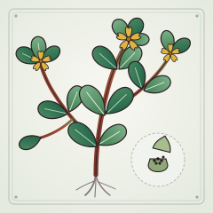
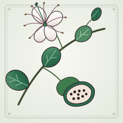
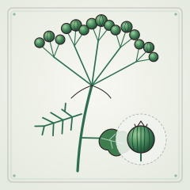
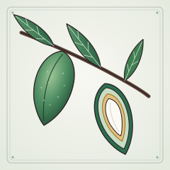
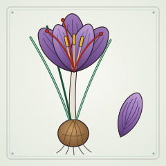
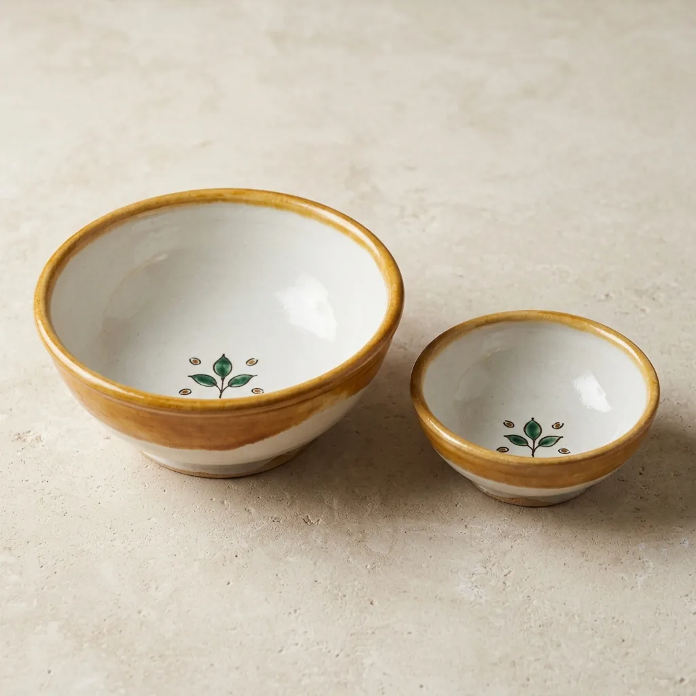

<!--
  =============================================================================
  PROYECTO: ¡COME! (كُلْ · Kul) · Zafas del siglo XI y propuesta gastronómica
  AUTORÍA Y PROPIEDAD INTELECTUAL: Restaurante Noor (Córdoba)
  DIRECCIÓN Y SUPERVISIÓN: Paco Morales y Paola Gualandi
  =============================================================================
-->
<!DOCTYPE html>
<html lang="es">
<head>
  <meta charset="utf-8">
  <meta name="viewport" content="width=device-width, initial-scale=1.0, viewport-fit=cover">
  <meta name="author" content="Autoría: Restaurante Noor · Dirección y supervisión: Paco Morales y Paola Gualandi">
  <meta name="copyright" content="Restaurante Noor">
  <meta name="description" content="Propuesta gastronómica y de vajilla inspirada en la epigrafía cúfica de zafas andalusíes del siglo XI para Restaurante Noor. Autoría: Restaurante Noor.">
  <title>¡Come! (Kul) · Noor (Paco Morales & Paola Gualandi)</title>
  <link rel="icon" href="assets/favicon.svg" type="image/svg+xml">
  <link rel="canonical" href="https://leogallardo97-bit.github.io/zafas-kul-noor/">
  <meta property="og:type" content="website">
  <meta property="og:locale" content="es_ES">
  <meta property="og:site_name" content="¡Come! (كُلْ · Kul) · Restaurante Noor">
  <meta property="og:title" content="¡Come! (كُلْ · Kul) · Propuesta gastronómica para Noor">
  <meta property="og:description" content="Zafas andalusíes del siglo XI que ordenan «¡come!» y nombran el guiso: cuatro pases y una despensa de vanguardia. Autoría: Restaurante Noor · Dirección y supervisión: Paco Morales y Paola Gualandi.">
  <meta property="og:url" content="https://leogallardo97-bit.github.io/zafas-kul-noor/">
  <meta property="og:image" content="https://leogallardo97-bit.github.io/zafas-kul-noor/assets/img/og-kul.jpg">
  <meta property="og:image:width" content="1200">
  <meta property="og:image:height" content="630">
  <meta property="og:image:alt" content="Portada de la propuesta: «¡Come!» y una zafa con la inscripción cúfica كل بقلية en verde y manganeso sobre blanco de estaño.">
  <meta name="twitter:card" content="summary_large_image">
<link rel="stylesheet" href="assets/fonts/fonts.css">
<link rel="preload" as="image" href="assets/img/plato-baqliyya.webp" type="image/webp">
<style>
/* Layout: una secuencia vertical de láminas a pantalla completa; cada lámina es una página de la propuesta, con la zafa como objeto central. */
:root {
  --tin: #f1f4ee;          /* blanco de estaño, con un punto de verde */
  --tin-2: #e4eae1;        /* superficie */
  --ink: #2a1d22;          /* manganeso */
  --ink-2: #5d4c52;        /* manganeso diluido */
  --copper: #2c6e4f;       /* verde de cobre */
  --melado: #a8741f;       /* melado (miel) */
  --line: rgba(42, 29, 34, .16);
  --ok: #2c6e4f;
  --no: #9b3b2e;
  /* colores físicos de la pieza: iguales en ambos temas */
  --glaze: #f8f8f3;
  --glaze-edge: #d9ddd2;
  --ink-green: #3f7d4f;
  --ink-mn: #2b1e1f;
  /* minigráficos: un tono en dos pasos (2016–2020 → 2021–2025), validados como rampa ordinal */
  --t-a: #7aab90;
  --t-b: #2c6e4f;

  --f-display: "Gloock", "Georgia", "Times New Roman", serif;
  --f-body: "Gentium Book Plus", "Gentium Plus", "Charis SIL", "Georgia", serif;
  --f-kufi: "Reem Kufi", "Amiri", "Noto Kufi Arabic", "Segoe UI", sans-serif;
  --f-naskh: "Amiri", "Noto Naskh Arabic", "Times New Roman", serif;

  --fs-hero: clamp(3.6rem, 11vw, 8.5rem);
  --fs-h2: clamp(2rem, 4.4vw, 3.5rem);
  --fs-lead: clamp(1.12rem, 1.6vw, 1.35rem);
  --fs-body: 1.06rem;
  --fs-small: .92rem;
  --fs-label: .76rem;
}
@media (prefers-color-scheme: dark) {
  :root:not([data-theme="light"]) {
    --tin: #18120f; --tin-2: #231b1a; --ink: #eceee6; --ink-2: #b9aea9;
    --copper: #6fbf8f; --melado: #d9a653; --line: rgba(236, 238, 230, .16);
    --ok: #6fbf8f; --no: #e08a74; color-scheme: dark;
    --t-a: #3d7a59; --t-b: #6fbf8f;
  }
}
:root[data-theme="dark"] {
  --tin: #18120f; --tin-2: #231b1a; --ink: #eceee6; --ink-2: #b9aea9;
  --copper: #6fbf8f; --melado: #d9a653; --line: rgba(236, 238, 230, .16);
  --ok: #6fbf8f; --no: #e08a74; color-scheme: dark;
  --t-a: #3d7a59; --t-b: #6fbf8f;
}

html { scroll-snap-type: y proximity; scroll-behavior: auto; }
body { margin: 0; background: var(--tin); color: var(--ink); font-family: var(--f-body); font-size: var(--fs-body); line-height: 1.55; }
* { box-sizing: border-box; }
[hidden] { display: none !important; }
.nw { white-space: nowrap; }
h1, h2, h3 { font-family: var(--f-display); font-weight: 400; line-height: 1.04; margin: 0; text-wrap: balance; letter-spacing: -.01em; }
p { margin: 0; }
[lang="ar"] { font-family: var(--f-kufi); }
.tr { font-style: italic; }
.label { font-family: var(--f-kufi); font-size: var(--fs-label); letter-spacing: .16em; text-transform: uppercase; color: var(--ink-2); font-weight: 500; }
.label b { color: var(--copper); font-weight: 600; }
a { color: var(--copper); }
button { font: inherit; color: inherit; }
:focus-visible { outline: 2px solid var(--copper); outline-offset: 3px; }

/* Láminas */
.slide {
  min-height: 100vh; min-height: 100dvh;
  display: grid; align-content: center;
  padding-block: 64px 104px;
  padding-left: max(16px, env(safe-area-inset-left, 0px));
  padding-right: max(16px, env(safe-area-inset-right, 0px));
  scroll-snap-align: start;
  border-bottom: 1px solid var(--line);
}
.wrap { width: 100%; max-width: 1180px; margin: 0 auto; display: grid; gap: 28px; }
.head { display: grid; gap: 14px; max-width: 62ch; }
.lead { font-size: var(--fs-lead); color: var(--ink-2); max-width: 60ch; }
.two { display: grid; grid-template-columns: minmax(0, 1fr) minmax(0, 1fr); gap: clamp(24px, 4vw, 64px); align-items: center; }
.two > * { min-width: 0; }
@media (max-width: 860px) { .two { grid-template-columns: minmax(0, 1fr); } }

/* Portada */
.cover h1 { font-size: var(--fs-hero); line-height: .92; }
.cover h1 .ar { font-family: var(--f-kufi); font-weight: 600; color: var(--copper); font-size: .62em; margin-left: .18em; vertical-align: .08em; }
.cover .thesis { font-size: var(--fs-lead); max-width: 34ch; }
.byline { font-size: var(--fs-small); color: var(--ink-2); border-top: 1px solid var(--line); padding-top: 12px; max-width: 40ch; }

/* Zafa interactiva */
.zafa { margin: 0; display: grid; gap: 14px; justify-items: center; }
.zafa-stage { position: relative; width: min(100%, 460px, 56vh); width: min(100%, 460px, 56dvh); aspect-ratio: 1; max-width: 100%; }
.zafa-stage svg, .zafa-stage canvas { position: absolute; inset: 0; width: 100%; height: 100%; }
.zafa-stage canvas { touch-action: none; cursor: grab; transition: opacity .9s ease; border-radius: 50%; }
.zafa-stage canvas:active { cursor: grabbing; }
.zafa-stage canvas.gone { opacity: 0; pointer-events: none; }
.zafa-stage .plate-shadow { position: absolute; inset: 4% 4% 0; border-radius: 50%; box-shadow: 0 30px 50px -28px rgba(20, 10, 10, .55); }
.zafa-stage .print-dish { display: none; }
.zafa-controls { display: flex; gap: 10px; flex-wrap: wrap; justify-content: center; }
.btn { border: 1px solid var(--ink); background: transparent; padding: 8px 16px; border-radius: 999px; cursor: pointer; font-family: var(--f-kufi); font-size: .82rem; letter-spacing: .08em; text-transform: uppercase; }
.btn:hover { background: var(--ink); color: var(--tin); }
.btn.solid { background: var(--copper); border-color: var(--copper); color: var(--tin); }
.btn.solid:hover { filter: brightness(1.08); }
.zafa-cap { text-align: center; max-width: 40ch; font-size: var(--fs-small); color: var(--ink-2); min-height: 4.2em; }
.zafa-cap .reading { display: grid; gap: 2px; color: var(--ink); }
.zafa-cap .reading .ar-line { font-family: var(--f-kufi); font-size: 1.5rem; color: var(--copper); font-weight: 600; }
.zafa-cap .reading .es { font-family: var(--f-display); font-size: 1.35rem; }
.zafa-cap .synth-note { display: block; font-size: .74rem; color: var(--ink-2); opacity: .82; margin-top: 3px; }

/* La pieza */
.facts { display: grid; grid-template-columns: max-content minmax(0, 1fr); gap: 10px 22px; margin: 0; }
.facts dt { font-family: var(--f-kufi); font-size: var(--fs-label); letter-spacing: .14em; text-transform: uppercase; color: var(--copper); padding-top: .3em; }
.facts dd { margin: 0; font-variant-numeric: tabular-nums; }
@media (max-width: 520px) { .facts { grid-template-columns: minmax(0, 1fr); gap: 2px; } .facts dd { margin-bottom: 10px; } }
.drawing { width: 100%; height: auto; display: block; color: var(--ink); }
.drawing text { font-family: var(--f-body); fill: var(--ink-2); font-variant-numeric: tabular-nums; }
.drawing .sec { fill: var(--ink); }
.drawing .out { fill: none; stroke: var(--ink); stroke-width: 1.3; vector-effect: non-scaling-stroke; }
.drawing .dim { stroke: var(--ink-2); stroke-width: .8; vector-effect: non-scaling-stroke; fill: none; }
.drawing .axis { stroke: var(--ink-2); stroke-width: .8; stroke-dasharray: 6 3 1.5 3; vector-effect: non-scaling-stroke; }
.drawing-note { font-size: var(--fs-small); color: var(--ink-2); }
.places { display: flex; flex-wrap: wrap; gap: 6px 8px; padding: 0; margin: 0; list-style: none; }
.places li { font-size: var(--fs-small); border: 1px solid var(--line); border-radius: 999px; padding: 2px 10px; }
.places li.main { border-color: var(--copper); color: var(--copper); }

/* Deseo / confianza / mandato */
.trio { display: grid; grid-template-columns: repeat(3, minmax(0, 1fr)); gap: 0; border-top: 1px solid var(--ink); }
.trio > div { padding: 22px 22px 6px 0; display: grid; gap: 10px; align-content: start; min-width: 0; }
.trio > div + div { padding-left: 22px; border-left: 1px solid var(--line); }
.trio .verb { font-family: var(--f-display); font-size: clamp(1.6rem, 2.6vw, 2.2rem); }
.trio .words { font-family: var(--f-kufi); font-size: 1.7rem; color: var(--ink-2); line-height: 1.5; }
.trio .gloss { font-style: italic; color: var(--ink-2); }
.trio .now .verb, .trio .now .words { color: var(--copper); }
.trio .now { background: var(--tin-2); padding-right: 22px; }
@media (max-width: 760px) { .trio { grid-template-columns: minmax(0, 1fr); } .trio > div + div { padding-left: 0; border-left: 0; border-top: 1px solid var(--line); } .trio .now { padding-left: 16px; } }
.aside { border-left: 3px solid var(--melado); padding: 4px 0 4px 16px; max-width: 70ch; color: var(--ink-2); }

/* Cuatro guisos */
.dishes { display: grid; grid-template-columns: repeat(4, minmax(0, 1fr)); gap: 16px; }
@media (max-width: 960px) { .dishes { grid-template-columns: repeat(2, minmax(0, 1fr)); } }
@media (max-width: 480px) { .dishes { grid-template-columns: minmax(0, 1fr); } }
.dish { border-top: 2px solid var(--ink); padding-top: 14px; display: grid; gap: 6px; align-content: start; }
.dish .ar { font-family: var(--f-kufi); font-size: 2.1rem; color: var(--copper); font-weight: 600; line-height: 1.5; }
.dish .tr { font-size: 1.15rem; }
.dish .count { font-family: var(--f-display); font-size: 2.6rem; line-height: 1; font-variant-numeric: tabular-nums; }
.dish .count small { font-family: var(--f-body); font-size: var(--fs-small); color: var(--ink-2); margin-left: 6px; }
.dish .src { font-size: var(--fs-small); color: var(--ink-2); }

/* Despensa */
.pantry-bar { display: flex; flex-wrap: wrap; gap: 12px 20px; align-items: center; }
.tally { font-variant-numeric: tabular-nums; color: var(--ink-2); font-size: var(--fs-small); }
.pantry { display: grid; grid-template-columns: repeat(auto-fill, minmax(min(100%, 200px), 1fr)); gap: 10px; }
.item { text-align: left; border: 1px solid var(--line); background: var(--tin); border-radius: 10px; padding: 12px 14px; cursor: pointer; display: grid; gap: 4px; align-content: start; min-height: 64px; }
.item:hover { border-color: var(--ink-2); }
.item .name { font-family: var(--f-display); font-size: 1.2rem; line-height: 1.15; }
.item .verdict { display: none; font-family: var(--f-kufi); font-size: var(--fs-label); letter-spacing: .12em; text-transform: uppercase; font-weight: 600; }
.item .why { display: none; font-size: .88rem; color: var(--ink-2); line-height: 1.4; }
.item[aria-expanded="true"] .verdict, .item[aria-expanded="true"] .why { display: block; }
.item[aria-expanded="true"].yes { border-color: var(--ok); background: var(--tin-2); }
.item[aria-expanded="true"].yes .verdict { color: var(--ok); }
.item[aria-expanded="true"].no { border-color: var(--no); border-style: dashed; }
.item[aria-expanded="true"].no .verdict { color: var(--no); }
.item[aria-expanded="true"].no .name { text-decoration: line-through; text-decoration-color: var(--no); text-decoration-thickness: 2px; }
.traps { display: grid; grid-template-columns: repeat(3, minmax(0, 1fr)); gap: 16px; }
.traps p { font-size: var(--fs-small); color: var(--ink-2); border-top: 1px solid var(--line); padding-top: 10px; }
.traps b { color: var(--ink); font-weight: 700; }
@media (max-width: 760px) { .traps { grid-template-columns: minmax(0, 1fr); } }

/* Despensa de vanguardia */
.vgrid { display: grid; grid-template-columns: repeat(5, minmax(0, 1fr)); gap: 18px; }
@media (max-width: 1080px) { .vgrid { grid-template-columns: repeat(3, minmax(0, 1fr)); } }
@media (max-width: 760px) { .vgrid { grid-template-columns: repeat(2, minmax(0, 1fr)); } }
@media (max-width: 480px) { .vgrid { grid-template-columns: minmax(0, 1fr); } }
.vcard { border-top: 2px solid var(--ink); padding-top: 10px; display: flex; flex-direction: column; gap: 5px; min-width: 0; }
.vcard .trend { margin-top: auto; padding-top: 4px; }
.vcard .label { letter-spacing: .12em; }
.vcard h3 { font-size: 1.38rem; }
.vcard .ar { font-family: var(--f-kufi); font-size: 1.22rem; color: var(--copper); font-weight: 600; line-height: 1.35; }
.vcard .lat { font-size: var(--fs-small); color: var(--ink-2); }
.vcard .ev, .vcard .tech { font-size: var(--fs-small); line-height: 1.4; }
.vcard .ev { color: var(--ink-2); }
.vcard .plate { margin: 2px 0; width: clamp(78px, 11vh, 112px); width: clamp(78px, 11dvh, 112px); aspect-ratio: 1; border-radius: 8px; overflow: hidden; background: var(--tin-2); border: 1px solid var(--line); }
.vcard .plate img { width: 100%; height: 100%; object-fit: cover; display: block; }
.trend { margin: 2px 0 0; display: grid; gap: 2px; }
.trend svg { width: 100%; height: auto; display: block; overflow: visible; }
.trend .track { stroke: var(--line); stroke-width: 1; }
.trend .link { stroke: var(--t-a); stroke-width: 2; stroke-linecap: round; }
.trend .dot-a { fill: var(--t-a); stroke: var(--tin); stroke-width: 2; }
.trend .dot-b { fill: var(--t-b); stroke: var(--tin); stroke-width: 2; }
.trend .hit { fill: transparent; outline: none; }
.trend .hit:focus-visible { stroke: var(--copper); stroke-width: 1.5; }
.trend figcaption { font-size: var(--fs-small); color: var(--ink-2); font-variant-numeric: tabular-nums; }
.trend figcaption b { color: var(--ink); font-weight: 700; }
.vlegend { display: flex; flex-wrap: wrap; gap: 6px 18px; align-items: center; font-size: var(--fs-small); color: var(--ink-2); margin: 0; padding: 0; list-style: none; }
.vlegend li { display: inline-flex; align-items: center; gap: 6px; }
.vlegend .sw { width: 10px; height: 10px; border-radius: 50%; display: inline-block; }
.method { font-size: var(--fs-small); color: var(--ink-2); border-top: 1px solid var(--line); padding-top: 10px; max-width: 120ch; }
.method b { color: var(--ink); }
.vdata summary { cursor: pointer; font-size: var(--fs-small); color: var(--copper); width: max-content; }
.vdata .scroll { overflow-x: auto; }
.vdata table { border-collapse: collapse; font-size: .86rem; margin-top: 8px; font-variant-numeric: tabular-nums; }
.vdata th, .vdata td { text-align: left; padding: 4px 14px 4px 0; border-bottom: 1px solid var(--line); vertical-align: top; }
.vdata th { font-weight: 700; }
.vdata thead th + th { text-align: right; }
.vdata td.n { text-align: right; }
.vtip { position: fixed; z-index: 20; pointer-events: none; background: var(--ink); color: var(--tin); border-radius: 8px; padding: 6px 10px; font-size: .82rem; line-height: 1.35; box-shadow: 0 8px 24px -10px rgba(0, 0, 0, .5); }
.vtip b { font-size: 1rem; font-weight: 700; }
.vtip .key { display: inline-block; width: 12px; height: 2px; vertical-align: middle; margin-right: 6px; }

/* Pases */
@media (min-width: 861px) {
  /* el plato acompaña la lectura cuando el texto es más alto que la ventana */
  .pase .two { align-items: start; }
  .pase .zafa { position: sticky; top: max(24px, calc(50vh - 290px)); top: max(24px, calc(50dvh - 290px)); }
}
.pase .eyebrow-ar { font-family: var(--f-kufi); color: var(--copper); }
.pase h2 { font-size: var(--fs-h2); }
.pase .say { display: flex; flex-wrap: wrap; gap: 4px 14px; align-items: baseline; font-size: 1.2rem; }
.pase .say .ar { font-family: var(--f-kufi); font-size: 1.6rem; color: var(--copper); font-weight: 600; }
.blocks { display: grid; gap: 16px; }
.block { display: grid; gap: 6px; }
.block h3 { font-family: var(--f-kufi); font-size: var(--fs-label); letter-spacing: .16em; text-transform: uppercase; color: var(--copper); font-weight: 600; }
.chips { display: flex; flex-wrap: wrap; gap: 6px; padding: 0; margin: 0; list-style: none; }
.chips li { border: 1px solid var(--line); border-radius: 999px; padding: 1px 10px; font-size: var(--fs-small); background: var(--tin); }
.chips li.star { border-color: var(--copper); color: var(--copper); font-weight: 700; }
.warn { border: 1px dashed var(--no); border-radius: 10px; padding: 10px 14px; font-size: var(--fs-small); }
.warn b { color: var(--no); }
.chips li.vanguard { border-style: dashed; border-color: var(--melado); font-weight: 700; }
.block.vanguard { border-left: 3px solid var(--melado); padding-left: 14px; display: grid; grid-template-columns: 56px minmax(0, 1fr); gap: 4px 12px; align-items: center; }
.block.vanguard .vthumb { grid-row: 1 / span 2; width: 56px; height: 56px; border-radius: 8px; border: 1px solid var(--line); background: var(--tin-2); display: block; }

/* Banco de inscripciones */
.bank { display: grid; grid-template-columns: repeat(auto-fill, minmax(min(100%, 210px), 1fr)); gap: 0; border-top: 1px solid var(--ink); }
.bank > div { padding: 16px 14px 16px 0; border-bottom: 1px solid var(--line); display: grid; gap: 2px; align-content: start; }
.bank .ar { font-family: var(--f-kufi); font-size: 1.7rem; color: var(--copper); font-weight: 600; line-height: 1.5; }
.bank .es { font-family: var(--f-display); font-size: 1.2rem; }
.bank .etym { font-size: .86rem; color: var(--ink-2); }
.bank .etym b { color: var(--melado); font-weight: 700; }

/* Zafa de Noor */
.sizes { display: grid; grid-template-columns: minmax(0, 1.15fr) minmax(0, .85fr); gap: 14px; align-items: start; }
@media (max-width: 560px) { .sizes { grid-template-columns: minmax(0, 1fr); } }
.zafa-render { margin: 0; display: grid; gap: 8px; }
.zafa-render img { width: 100%; height: auto; aspect-ratio: 1; object-fit: cover; border-radius: 14px; border: 1px solid var(--line); background: var(--tin-2); display: block; }
.specs { display: grid; gap: 12px; margin: 0; padding: 0; list-style: none; }
.specs li { display: grid; grid-template-columns: 8.5em minmax(0, 1fr); gap: 14px; border-top: 1px solid var(--line); padding-top: 10px; }
.specs li span { font-family: var(--f-kufi); font-size: var(--fs-label); letter-spacing: .14em; text-transform: uppercase; color: var(--copper); padding-top: .25em; }
@media (max-width: 520px) { .specs li { grid-template-columns: minmax(0, 1fr); gap: 2px; } }

/* Guion de sala */
.script { display: grid; grid-template-columns: repeat(2, minmax(0, 1fr)); gap: 20px; }
.script figure { margin: 0; background: var(--tin-2); border-radius: 14px; padding: 22px 24px; display: grid; gap: 12px; align-content: start; }
.script blockquote { margin: 0; font-size: 1.18rem; line-height: 1.5; }
.script figcaption { font-family: var(--f-kufi); font-size: var(--fs-label); letter-spacing: .16em; text-transform: uppercase; color: var(--copper); font-weight: 600; }
@media (max-width: 760px) { .script { grid-template-columns: minmax(0, 1fr); } }

/* Rigor */
.ledger { display: grid; grid-template-columns: repeat(2, minmax(0, 1fr)); gap: 28px; }
.ledger section { display: grid; gap: 10px; align-content: start; }
.ledger h3 { font-size: 1.6rem; border-bottom: 2px solid var(--ink); padding-bottom: 8px; }
.ledger .prop h3 { border-bottom-style: dashed; border-color: var(--melado); }
.ledger ul { margin: 0; padding-left: 1.1em; display: grid; gap: 8px; }
@media (max-width: 760px) { .ledger { grid-template-columns: minmax(0, 1fr); } }

/* Hoja de ruta */
.road { list-style: none; margin: 0; padding: 0; display: grid; grid-template-columns: repeat(5, minmax(0, 1fr)); gap: 0; counter-reset: step; }
.road li { counter-increment: step; padding: 0 16px 0 0; display: grid; gap: 8px; align-content: start; border-top: 2px solid var(--ink); padding-top: 14px; }
.road li::before { content: counter(step); font-family: var(--f-display); font-size: 2.4rem; line-height: 1; color: var(--copper); }
.road b { font-family: var(--f-display); font-weight: 400; font-size: 1.35rem; }
.road p { font-size: var(--fs-small); color: var(--ink-2); }
@media (max-width: 900px) { .road { grid-template-columns: minmax(0, 1fr); gap: 18px; } }

/* Fuentes */
.refs-cols { display: grid; grid-template-columns: repeat(2, minmax(0, 1fr)); gap: 18px 40px; }
.refs-cols h3 { font-family: var(--f-kufi); font-size: var(--fs-label); letter-spacing: .16em; text-transform: uppercase; color: var(--copper); font-weight: 600; margin-bottom: 10px; }
@media (max-width: 760px) { .refs-cols { grid-template-columns: minmax(0, 1fr); } }
.refs { margin: 0; padding: 0; list-style: none; display: grid; gap: 9px; max-width: 80ch; }
.refs li { padding-left: 1.4em; text-indent: -1.4em; font-size: .95rem; overflow-wrap: anywhere; }
.closing-row { display: flex; flex-wrap: wrap; align-items: center; gap: 4px 28px; border-top: 1px solid var(--line); padding-top: 12px; }
.closing { font-family: var(--f-kufi); font-size: clamp(2.6rem, 6vw, 4.4rem); color: var(--copper); line-height: 1.2; font-weight: 600; }

/* Barra de navegación */
.dock {
  position: fixed; left: 0; right: 0; bottom: 0; z-index: 10;
  display: flex; justify-content: center;
  padding-bottom: calc(12px + env(safe-area-inset-bottom, 0px));
  padding-left: max(16px, env(safe-area-inset-left, 0px));
  padding-right: max(16px, env(safe-area-inset-right, 0px));
  pointer-events: none;
}
.dock-inner { pointer-events: auto; display: flex; align-items: center; gap: 12px; background: var(--ink); color: var(--tin); border-radius: 999px; padding: 6px 8px; box-shadow: 0 10px 30px -12px rgba(0, 0, 0, .45); max-width: 100%; }
.dock button { border: 0; background: transparent; color: var(--tin); width: 38px; height: 38px; border-radius: 50%; cursor: pointer; font-size: 1.1rem; display: grid; place-items: center; }
.dock button:hover { background: rgba(255, 255, 255, .12); }
.dock button:disabled { opacity: .35; cursor: default; }
.dock .where { display: grid; gap: 4px; min-width: 0; width: clamp(120px, 28vw, 240px); }
.dock .where span { font-family: var(--f-kufi); font-size: .72rem; letter-spacing: .12em; text-transform: uppercase; white-space: nowrap; overflow: hidden; text-overflow: ellipsis; font-variant-numeric: tabular-nums; }
.dock .bar { height: 3px; background: rgba(255, 255, 255, .2); border-radius: 2px; overflow: hidden; }
.dock .bar i { display: block; height: 100%; width: 0; background: var(--melado); transition: width .3s ease; }

@media (prefers-reduced-motion: reduce) {
  .zafa-stage canvas, .dock .bar i { transition: none; }
}

/* Impresión: una lámina por página, inscripciones y plato servido visibles */
@page { size: 297mm 167mm; margin: 0; }
@media print {
  html { scroll-snap-type: none; font-size: 10.5px; }
  body { font-size: 10.5px; }
  :root { --fs-hero: 5.6rem; --fs-h2: 2.6rem; --fs-lead: 1.15rem; --fs-body: 1rem; }
  .zafa-cap { min-height: 0; }
  body { background: #fff; }
  .slide { min-height: 167mm; height: 167mm; overflow: hidden; break-after: page; page-break-after: always; border: 0; padding-block: 10mm; padding-inline: 14mm; }
  .slide:last-child { break-after: auto; page-break-after: auto; }
  .dock, .zafa-controls, .zafa-stage canvas, .zafa-cap .hint, .pantry-bar .btn { display: none !important; }
  .zafa-cap .reading { display: grid !important; }
  .zafa-stage { width: 62mm; }
  .zafa-stage .print-dish { display: block; position: absolute; right: -5mm; bottom: -2mm; width: 22mm; height: 22mm; border-radius: 50%; object-fit: cover; border: 1.5px solid #fff; box-shadow: 0 2px 6px rgba(0, 0, 0, .28); }
  .two { grid-template-columns: minmax(0, 1fr) minmax(0, 1fr) !important; gap: 10mm; }
  .dishes { grid-template-columns: repeat(4, minmax(0, 1fr)) !important; }
  .trio { grid-template-columns: repeat(3, minmax(0, 1fr)) !important; }
  .trio > div + div { border-top: 0 !important; border-left: 1px solid var(--line) !important; padding-left: 16px !important; }
  .traps, .script, .ledger { grid-template-columns: repeat(2, minmax(0, 1fr)) !important; }
  .traps { grid-template-columns: repeat(3, minmax(0, 1fr)) !important; }
  .road { grid-template-columns: repeat(5, minmax(0, 1fr)) !important; }
  .drawing { max-height: 78mm; }
  .blocks { gap: 8px; }
  .pase .blocks p, .specs p { font-size: .95rem; }
  .item .verdict, .item .why { display: block; }
  .item.no .name { text-decoration: line-through; }
  .pantry { grid-template-columns: repeat(5, minmax(0, 1fr)); gap: 5px; }
  .item { padding: 6px 8px; min-height: 0; }
  .item .why { font-size: .7rem; }
  .item .name { font-size: .95rem; }
  .wrap { gap: 14px; }
  .lead { font-size: 1rem; }
  .vgrid { grid-template-columns: repeat(5, minmax(0, 1fr)) !important; gap: 8px; }
  .vcard h3 { font-size: 1.1rem; }
  .vcard .ar { font-size: 1rem; }
  .vcard .plate { width: 20mm; height: 20mm; }
  .vcard .ev, .vcard .tech, .trend figcaption, .method { font-size: .74rem; }
  .vdata, .vtip { display: none !important; }
  .pase .zafa { position: static !important; }
  .pase .two { align-items: center !important; }
  .refs-cols { grid-template-columns: repeat(2, minmax(0, 1fr)) !important; gap: 6px 24px; }
  .refs li { font-size: .82rem; }
  .closing { font-size: 2.6rem; }
}
</style>

<main id="deck" lang="es" data-glaze="assets/img/zafa-esmalte.webp">

<!-- 1 · Portada -->
<section class="slide cover" data-title="Portada" id="portada">
  <div class="wrap two">
    <div class="head">
      <p class="label">Propuesta gastronómica para <b>Noor</b> · Córdoba</p>
      <h1>¡Come!<span class="ar" lang="ar" dir="rtl">كُلْ</span></h1>
      <p class="thesis">En el siglo XI, algunas zafas de <span class="nw">al-Andalus</span> llevaban una orden escrita en el fondo: <span class="tr">kul</span>, «¡come!», y el nombre del guiso. Proponemos llevar esa idea a Noor en cuatro pases.</p>
      <p class="byline">Autoría: Restaurante Noor · Dirección y supervisión: Paco Morales y Paola Gualandi · Octubre de 2026</p>
    </div>
    <figure class="zafa" data-stew="baqliyya" data-photo="assets/img/plato-baqliyya.webp" data-text="كل بقلية" data-seed="11" data-eager data-alt="Baqliyya: guiso de cordero con coliflor, cebolla, cilantro y alcaravea, con verdolaga, que cubre el fondo de la zafa">
      <div class="zafa-stage"></div>
      <div class="zafa-controls"><button class="btn solid eat" type="button">Comer de un bocado</button><button class="btn reset" type="button" hidden>Volver a servir</button></div>
      <figcaption class="zafa-cap" aria-live="polite">
        <span class="hint">Arrastra sobre el guiso para comerlo. Al terminar, la zafa dice qué has comido.</span>
        <span class="reading" hidden><span class="ar-line" lang="ar" dir="rtl">كل بقلية</span><span class="es">«¡Come guiso de verduras!»</span><span><span class="tr">kul baqliyya</span>. Inscripción documentada en siete zafas de València, Benetússer y Dénia.</span><span>En Noor, con verdolaga (<span class="tr">al-baqla al-ḥamqāʾ</span>), de la misma raíz que <span class="tr">baqliyya</span>.</span></span>
        <small class="synth-note">Recreación visual de la propuesta (imagen de síntesis)</small>
      </figcaption>
    </figure>
  </div>
</section>

<!-- 2 · La pieza -->
<section class="slide" data-title="La pieza" id="pieza">
  <div class="wrap">
    <div class="head">
      <p class="label">La pieza</p>
      <h2 style="font-size: var(--fs-h2)">Una fuente de mesa para compartir</h2>
      <p class="lead">En la València de las taifas, en la segunda mitad del siglo XI, se pintó en el fondo de estas zafas la palabra <span class="tr">kul</span>, «¡come!», seguida del nombre de un guiso. Pau Armengol y Carmen Barceló reunieron cuarenta piezas en un estudio publicado en 2024.</p>
    </div>
    <div class="two">
      <dl class="facts">
        <dt>Forma</dt><dd>Zafa (<span class="tr">ṣaḥfa</span>): base anular, perfil hemisférico y borde engrosado hacia fuera.</dd>
        <dt>Tamaño</dt><dd>Boca de 250 a 300 mm; altura de 100 a 150 mm.</dd>
        <dt>Capacidad</dt><dd>De 2 a 3 kg de comida, para 6 a 12 comensales.</dd>
        <dt>Técnica</dt><dd>Verde y manganeso sobre blanco: el contorno de la letra en manganeso y el relleno en verde.</dd>
        <dt>Datación</dt><dd>Segunda mitad del siglo XI, por la forma de las letras, la estratigrafía y los materiales asociados.</dd>
        <dt>Hallazgos</dt><dd>
          <ul class="places">
            <li class="main">València</li><li>Benetússer</li><li>Silla</li><li>Dénia</li><li>El Castellar d'Alcoi</li><li>La Vila Joiosa</li><li>Albarracín</li><li>Toledo</li><li>Mértola</li><li>Alcazaba de Málaga</li>
          </ul>
        </dd>
      </dl>
      <figure style="margin:0; display:grid; gap:8px">
        <svg class="drawing" id="profile-main" viewBox="-180 -36 360 182" role="img" aria-label="Dibujo de la zafa: a la izquierda en sección, a la derecha en alzado, con boca de 250 a 300 mm y altura de 100 a 150 mm"></svg>
        <figcaption class="drawing-note">Dibujo esquemático según la convención arqueológica: sección a la izquierda, alzado a la derecha. Medidas tomadas del estudio.</figcaption>
      </figure>
    </div>
  </div>
</section>

<!-- 3 · Del deseo al mandato -->
<section class="slide" data-title="La idea" id="idea">
  <div class="wrap">
    <div class="head">
      <p class="label">La idea</p>
      <h2 style="font-size: var(--fs-h2)">Una vajilla que da órdenes</h2>
      <p class="lead">La cerámica andalusí con letras solía desear un bien a quien la usaba. La serie «¡Come!» hace otra cosa: ordena comer y dice qué hay en el plato.</p>
    </div>
    <div class="trio">
      <div>
        <p class="label">Desear</p>
        <p class="verb">«Que tengas…»</p>
        <p class="words" lang="ar" dir="rtl">الملك · بركة · يمن · عافية</p>
        <p class="gloss"><span class="tr">al-mulk, baraka, yumn, ʿāfiya</span>: poder, bendición, dicha, salud.</p>
        <p>Vajilla califal cordobesa en verde y manganeso.</p>
      </div>
      <div>
        <p class="label">Confiar</p>
        <p class="verb">«Confía…»</p>
        <p class="words" lang="ar" dir="rtl">توكل تكفى</p>
        <p class="gloss"><span class="tr">tawakkal tukfà</span>: «¡confía, te bastará!».</p>
        <p>Vajilla cordobesa y valenciana de los siglos X y XI.</p>
      </div>
      <div class="now">
        <p class="label"><b>Ordenar</b></p>
        <p class="verb">«¡Come…!»</p>
        <p class="words" lang="ar" dir="rtl">كل + اسم الطبق</p>
        <p class="gloss"><span class="tr">kul</span> + nombre del guiso.</p>
        <p>Serie «¡Come!», València, siglo XI.</p>
      </div>
    </div>
    <p class="aside">Noor toma como referencia la Córdoba califal. La serie «¡Come!» usa la misma técnica de verde y manganeso un siglo después, pero cambia el mensaje: pasa del deseo a la invitación directa.</p>
  </div>
</section>

<!-- 4 · Cuatro guisos -->
<section class="slide" data-title="Cuatro guisos" id="guisos">
  <div class="wrap">
    <div class="head">
      <p class="label">Lo documentado</p>
      <h2 style="font-size: var(--fs-h2)">Cuatro guisos escritos en barro</h2>
      <p class="lead">En cuatro grupos de zafas, la palabra que sigue a <span class="tr">kul</span> es el nombre de un guiso. Los cuatro tienen receta en los recetarios andalusíes de los siglos XIII y XIV.</p>
    </div>
    <div class="dishes">
      <div class="dish"><p class="ar" lang="ar" dir="rtl">كل بقلية</p><p class="tr">kul baqliyya</p><p>Guiso con verduras</p><p class="count">7<small>zafas</small></p><p class="src">Receta en el anónimo almohade, atribuida a Ziryāb.</p></div>
      <div class="dish"><p class="ar" lang="ar" dir="rtl">كل قرعية</p><p class="tr">kul qarʿiyya</p><p>Guiso con calabaza</p><p class="count">4<small>zafas</small></p><p class="src">Ibn Razīn y anónimo almohade.</p></div>
      <div class="dish"><p class="ar" lang="ar" dir="rtl">كل جليدية</p><p class="tr">kul ŷulaydiyya</p><p>«Encostradito»</p><p class="count">12<small>zafas</small></p><p class="src">Ibn Razīn y anónimo almohade.</p></div>
      <div class="dish"><p class="ar" lang="ar" dir="rtl">كل غسانية</p><p class="tr">kul gassāniyya</p><p>Guiso «de al-Gassānī»</p><p class="count">11<small>zafas</small></p><p class="src">Ibn Razīn y anónimo almohade.</p></div>
    </div>
    <p class="aside">Otras seis piezas dicen solo <span class="tr">kul</span> o llevan variantes, como <span class="tr">kul hanīʾan</span>, «¡come, buen provecho!», en un plato de la alcazaba de Málaga.</p>
  </div>
</section>

<!-- 5 · Despensa -->
<section class="slide" data-title="La despensa" id="despensa">
  <div class="wrap">
    <div class="head">
      <p class="label">La regla</p>
      <h2 style="font-size: var(--fs-h2)">Solo despensa andalusí</h2>
      <p class="lead">Lo que se nombre en una zafa tiene que haber podido estar en una cocina de <span class="nw">al-Andalus</span>. Lo que llegó de América después de 1492 queda fuera. Toca cada ingrediente para ver si entra.</p>
    </div>
    <div class="pantry-bar">
      <p class="tally" id="tally">Has revisado 0 de 20 ingredientes.</p>
      <button class="btn" type="button" id="reveal-all">Mostrar todos</button>
    </div>
    <div class="pantry" id="pantry"></div>
    <div class="traps">
      <p><b>La calabaza.</b> El <span class="tr">qarʿ</span> de la <span class="tr">qarʿiyya</span> es la calabaza de cuello o vinatera (<i>Lagenaria siceraria</i>). Las calabazas de pulpa naranja son americanas.</p>
      <p><b>La zanahoria.</b> En <span class="nw">al-Andalus</span> era morada o amarilla. La zanahoria naranja actual es una selección posterior.</p>
      <p><b>La naranja.</b> La <span class="tr">nāranŷ</span> andalusí era la naranja amarga. La dulce se difundió por Europa más tarde.</p>
    </div>
  </div>
</section>

<!-- 6 · Despensa de vanguardia -->
<section class="slide" data-title="Despensa de vanguardia" id="vanguardia">
  <div class="wrap">
    <div class="head">
      <p class="label">Rescate</p>
      <h2 style="font-size: var(--fs-h2)">Despensa de vanguardia</h2>
      <p class="lead">Un ingrediente más por plato. Los cinco ya se conocían en el siglo XI, casi nadie los ha estudiado desde la historia de <span class="nw">al-Andalus</span> y la ciencia de los alimentos los investiga cada vez más. Cada uno rescata algo distinto: una hierba, una hoja, un momento, una palabra y un residuo.</p>
    </div>
    <div class="vgrid">
      <article class="vcard">
        <p class="label">Portada · una hierba</p>
        <figure class="plate"></figure>
        <h3>Verdolaga</h3>
        <p class="ar" lang="ar" dir="rtl">البقلة الحمقاء</p>
        <p class="lat"><i>Portulaca oleracea</i> · <span class="tr">al-baqla al-ḥamqāʾ</span></p>
        <p class="ev">Ibn Baṣṣāl la cultiva entre las hortalizas de hoja. Comparte raíz con <span class="tr">baqliyya</span>, el guiso de verduras.</p>
        <p class="tech"><b>En Noor:</b> tallos lactofermentados, hoja fresca al pase y aceite verde.</p>
        <figure class="trend" data-a="187" data-b="403" data-name="Verdolaga"><figcaption><b>187 → 403</b> trabajos · ×2,2</figcaption></figure>
      </article>
      <article class="vcard">
        <p class="label">Pase I · una hoja</p>
        <figure class="plate"></figure>
        <h3>Alcaparra</h3>
        <p class="ar" lang="ar" dir="rtl">الكبر</p>
        <p class="lat"><i>Capparis spinosa</i> · <span class="tr">al-kabar</span></p>
        <p class="ev">Ibn Baṣṣāl la trata en el mismo capítulo que la berenjena. Hay restos en letrinas andalusíes de los siglos X a XII.</p>
        <p class="tech"><b>En Noor:</b> hoja y brote lactofermentados y «sal de alcaparra» sobre la costra.</p>
        <figure class="trend" data-a="80" data-b="138" data-name="Alcaparra"><figcaption><b>80 → 138</b> trabajos · ×1,7</figcaption></figure>
      </article>
      <article class="vcard">
        <p class="label">Pase II · un momento</p>
        <figure class="plate"></figure>
        <h3>Semilla verde de cilantro</h3>
        <p class="ar" lang="ar" dir="rtl">الكزبرة</p>
        <p class="lat"><i>Coriandrum sativum</i> · <span class="tr">al-kuzbara</span></p>
        <p class="ev">El cilantro ya está en la <span class="tr">qarʿiyya</span>. Ibn Baṣṣāl lo cuenta entre las especias y sus frutos aparecen en las letrinas.</p>
        <p class="tech"><b>En Noor:</b> el fruto aún verde, fresco o en salmuera ligera, sobre la calabaza.</p>
        <figure class="trend" data-a="193" data-b="329" data-name="Semilla verde de cilantro"><figcaption><b>193 → 329</b> trabajos · ×1,7</figcaption></figure>
      </article>
      <article class="vcard">
        <p class="label">Pase III · una palabra</p>
        <figure class="plate"></figure>
        <h3>Alloza</h3>
        <p class="ar" lang="ar" dir="rtl">اللوزة</p>
        <p class="lat">almendra verde · <span class="tr">allawza</span></p>
        <p class="ev"><i>Alloza</i> viene del árabe <span class="tr">allawza</span>, «la almendra»: la palabra de <span class="tr">kul al-lawz</span>. Ibn Baṣṣāl trata el almendro y su conservación.</p>
        <p class="tech"><b>En Noor:</b> entera y tierna en marzo y abril; encurtida el resto del año.</p>
        <figure class="trend" data-a="17" data-b="39" data-name="Alloza"><figcaption><b>17 → 39</b> trabajos · ×2,3</figcaption></figure>
      </article>
      <article class="vcard">
        <p class="label">Pase IV · un residuo</p>
        <figure class="plate"></figure>
        <h3>Tépalo de azafrán</h3>
        <p class="ar" lang="ar" dir="rtl">الزعفران</p>
        <p class="lat"><i>Crocus sativus</i> · <span class="tr">zaʿfarān</span></p>
        <p class="ev">Ibn Baṣṣāl describe el cultivo del azafrán. Hoy más del 90 % del peso de la flor se tira al sacar las hebras.</p>
        <p class="tech"><b>En Noor:</b> deshidratado en frío e infusionado. Antes, confirmar con AESAN si cuenta como nuevo alimento.</p>
        <figure class="trend" data-a="130" data-b="291" data-name="Tépalo de azafrán"><figcaption><b>130 → 291</b> trabajos · ×2,2</figcaption></figure>
      </article>
    </div>
    <ul class="vlegend" aria-label="Leyenda de los minigráficos">
      <li><span class="sw" style="background: var(--t-a)"></span>2016–2020</li>
      <li><span class="sw" style="background: var(--t-b)"></span>2021–2025</li>
      <li>Trabajos de ciencia de los alimentos en OpenAlex · escala común de 0 a 450</li>
    </ul>
    <p class="method"><b>Cómo se eligieron.</b> Cada ingrediente aparece en el siglo XI andalusí, en el tratado agrícola de Ibn Baṣṣāl (Toledo y Sevilla) o en letrinas de los siglos X a XII de Córdoba, Mértola, Badajoz y Almería (Peralta-Gómez <i>et al.</i>, 2026). En OpenAlex tiene entre 0 y 5 trabajos con enfoque andalusí, y sus publicaciones de ciencia de los alimentos crecen entre 1,7 y 2,3 veces de 2016–2020 a 2021–2025 (búsqueda en título y resumen, 16 de octubre de 2026). Son órdenes de magnitud; las consultas están en <i>bibliometria_ingredientes_openalex.csv</i>.</p>
    <details class="vdata">
      <summary>Ver los datos en tabla</summary>
      <div class="scroll">
        <table>
          <thead><tr><th scope="col">Ingrediente</th><th scope="col">2016–2020</th><th scope="col">2021–2025</th><th scope="col">Crecimiento</th><th scope="col">Enfoque andalusí</th></tr></thead>
          <tbody>
            <tr><th scope="row">Verdolaga</th><td class="n">187</td><td class="n">403</td><td class="n">×2,2</td><td class="n">1</td></tr>
            <tr><th scope="row">Alcaparra</th><td class="n">80</td><td class="n">138</td><td class="n">×1,7</td><td class="n">0</td></tr>
            <tr><th scope="row">Semilla verde de cilantro</th><td class="n">193</td><td class="n">329</td><td class="n">×1,7</td><td class="n">2</td></tr>
            <tr><th scope="row">Alloza</th><td class="n">17</td><td class="n">39</td><td class="n">×2,3</td><td class="n">5</td></tr>
            <tr><th scope="row">Tépalo de azafrán</th><td class="n">130</td><td class="n">291</td><td class="n">×2,2</td><td class="n">4</td></tr>
          </tbody>
        </table>
      </div>
    </details>
  </div>
</section>

<!-- 7 · Pase I -->
<section class="slide pase" data-title="Pase I · Berenjena" id="pase-1">
  <div class="wrap two">
    <figure class="zafa" data-stew="badinjan" data-photo="assets/img/plato-badinjan.webp" data-text="كل الباذنجان" data-seed="23" data-alt="Berenjena asada a la brasa en jugo de cordero, con costra fina de almendra y alcaparra, que cubre el fondo de la zafa">
      <div class="zafa-stage"></div>
      <div class="zafa-controls"><button class="btn solid eat" type="button">Comer de un bocado</button><button class="btn reset" type="button" hidden>Volver a servir</button></div>
      <figcaption class="zafa-cap" aria-live="polite">
        <span class="hint">Arrastra sobre el plato para comerlo.</span>
        <span class="reading" hidden><span class="ar-line" lang="ar" dir="rtl">كل الباذنجان</span><span class="es">«¡Come la berenjena!»</span><span>Inscripción propuesta. No aparece en ninguna pieza conocida.</span></span>
        <small class="synth-note">Recreación visual de la propuesta (imagen de síntesis)</small>
      </figcaption>
    </figure>
    <div class="blocks">
      <p class="label">Pase I de IV · a partir de la <span class="tr" style="text-transform:none">baqliyya</span></p>
      <h2>¡Come la berenjena!</h2>
      <p class="say"><span class="tr">kul al-bāḏinŷān</span><span class="ar" lang="ar" dir="rtl">كل الباذنجان</span></p>
      <div class="block"><h3>De dónde viene</h3><p>La <span class="tr">baqliyya</span>, «guiso con verduras», es uno de los cuatro guisos escritos en las zafas. La receta del anónimo almohade atribuida a Ziryāb lleva cordero, coliflor, cebolla, cilantro, alcaravea y pimienta, con una cobertura de almendra, huevo y pan. Otra versión admite berenjena.</p></div>
      <div class="block"><h3>Despensa del pase</h3><ul class="chips"><li class="star">berenjena</li><li>cordero</li><li>cebolla</li><li>cilantro</li><li>alcaravea</li><li>pimienta</li><li>aceite de oliva</li><li>almendra</li><li>huevo</li><li>pan</li><li class="vanguard">alcaparra</li></ul></div>
      <div class="block"><h3>Idea para la cocina</h3><p>La berenjena ocupa el lugar de la coliflor. Berenjena asada a la brasa y bañada con el jugo del guiso de cordero, cilantro y alcaravea. La cobertura de almendra, huevo y pan se convierte en una costra fina y crujiente.</p></div>
      <div class="block vanguard"><h3>Ingrediente de vanguardia</h3><p><b>Alcaparra: hoja, brote y alcaparrón.</b> Ibn Baṣṣāl la cultiva en el mismo capítulo que la berenjena y hay restos en letrinas andalusíes de los siglos X a XII. Hoja y brote lactofermentados, y «sal de alcaparra» para terminar la costra.</p></div>
      <div class="block"><h3>El momento</h3><p>El comensal termina la berenjena y en el fondo lee el nombre de lo que acaba de comer.</p></div>
    </div>
  </div>
</section>

<!-- 8 · Pase II -->
<section class="slide pase" data-title="Pase II · Calabaza" id="pase-2">
  <div class="wrap two">
    <figure class="zafa" data-stew="qar" data-photo="assets/img/plato-qar.webp" data-text="كل القرع" data-seed="37" data-alt="Láminas de calabaza de cuello confitadas en grasa de cordero, con orégano, tomillo y semilla verde de cilantro, que cubren el fondo de la zafa">
      <div class="zafa-stage"></div>
      <div class="zafa-controls"><button class="btn solid eat" type="button">Comer de un bocado</button><button class="btn reset" type="button" hidden>Volver a servir</button></div>
      <figcaption class="zafa-cap" aria-live="polite">
        <span class="hint">Arrastra sobre el plato para comerlo.</span>
        <span class="reading" hidden><span class="ar-line" lang="ar" dir="rtl">كل القرع</span><span class="es">«¡Come la calabaza!»</span><span>Inscripción propuesta, derivada de <span class="tr">kul qarʿiyya</span>, que sí está documentada.</span></span>
        <small class="synth-note">Recreación visual de la propuesta (imagen de síntesis)</small>
      </figcaption>
    </figure>
    <div class="blocks">
      <p class="label">Pase II de IV · a partir de la <span class="tr" style="text-transform:none">qarʿiyya</span></p>
      <h2>¡Come la calabaza!</h2>
      <p class="say"><span class="tr">kul al-qarʿ</span><span class="ar" lang="ar" dir="rtl">كل القرع</span></p>
      <div class="block"><h3>De dónde viene</h3><p>La <span class="tr">qarʿiyya</span>, «guiso con calabaza», está en Ibn Razīn y en el anónimo almohade: cordero joven, calabaza tierna, cebolla, aceite, pimienta, cilantro, orégano y tomillo. Ibn al-Jaṭīb, en el siglo XIV, la recomendaba a quien se recuperaba de la fiebre.</p></div>
      <p class="warn"><b>Ojo con la calabaza.</b> El <span class="tr">qarʿ</span> es la calabaza de cuello o vinatera (<i>Lagenaria siceraria</i>). Las calabazas naranjas de asar son americanas y no sirven.</p>
      <div class="block"><h3>Despensa del pase</h3><ul class="chips"><li class="star">calabaza de cuello</li><li>cordero lechal</li><li>cebolla</li><li>aceite de oliva</li><li>pimienta</li><li>cilantro</li><li>orégano</li><li>tomillo</li><li class="vanguard">semilla verde de cilantro</li></ul></div>
      <div class="block"><h3>Idea para la cocina</h3><p>Calabaza de cuello tierna en láminas finas, confitada en la grasa del cordero lechal. Caldo de cordero reducido con orégano y tomillo, y cilantro fresco al final.</p></div>
      <div class="block vanguard"><h3>Ingrediente de vanguardia</h3><p><b>Semilla verde de cilantro.</b> El cilantro ya está en la <span class="tr">qarʿiyya</span>; aquí se usa su fruto aún verde, antes de que se seque. Ibn Baṣṣāl lo cuenta entre las especias y sus frutos aparecen en letrinas de los siglos X a XII. Fresco o en salmuera ligera, sobre la calabaza confitada.</p></div>
      <div class="block"><h3>El momento</h3><p>Al retirar la última lámina aparece <span class="tr">kul al-qarʿ</span>: el plato confirma un ingrediente que el comensal quizá no ha reconocido.</p></div>
    </div>
  </div>
</section>

<!-- 9 · Pase III -->
<section class="slide pase" data-title="Pase III · Almendra" id="pase-3">
  <div class="wrap two">
    <figure class="zafa" data-stew="lawz" data-photo="assets/img/plato-lawz.webp" data-text="كل اللوز" data-seed="41" data-alt="Costra dorada de almendra, nuez y yema sobre capón guisado, con allozas tiernas, que cubre el fondo de la zafa">
      <div class="zafa-stage"></div>
      <div class="zafa-controls"><button class="btn solid eat" type="button">Comer de un bocado</button><button class="btn reset" type="button" hidden>Volver a servir</button></div>
      <figcaption class="zafa-cap" aria-live="polite">
        <span class="hint">Rompe la costra arrastrando sobre ella.</span>
        <span class="reading" hidden><span class="ar-line" lang="ar" dir="rtl">كل اللوز</span><span class="es">«¡Come la almendra!»</span><span>Inscripción propuesta. No aparece en ninguna pieza conocida.</span></span>
        <small class="synth-note">Recreación visual de la propuesta (imagen de síntesis)</small>
      </figcaption>
    </figure>
    <div class="blocks">
      <p class="label">Pase III de IV · a partir de la <span class="tr" style="text-transform:none">ŷulaydiyya</span></p>
      <h2>¡Come la almendra!</h2>
      <p class="say"><span class="tr">kul al-lawz</span><span class="ar" lang="ar" dir="rtl">كل اللوز</span></p>
      <div class="block"><h3>De dónde viene</h3><p>La <span class="tr">ŷulaydiyya</span>, el «encostradito» (de <span class="tr">ŷild</span>, piel), es ave guisada con especias y pasas bajo una costra de almendras, nueces, pan rallado y yemas. Una versión añade miel, canela, galanga, azafrán, espliego y piñones.</p></div>
      <div class="block"><h3>Despensa del pase</h3><ul class="chips"><li class="star">almendra</li><li>capón o gallina</li><li>pasas</li><li>nuez</li><li>piñón</li><li>yema de huevo</li><li>pan</li><li>miel</li><li>canela</li><li>galanga</li><li>azafrán</li><li>espliego</li><li class="vanguard">alloza</li></ul></div>
      <div class="block"><h3>Idea para la cocina</h3><p>Capón o gallina de corral bajo una costra de almendra, yema y pan, horneada en la propia zafa. El comensal rompe la costra en la mesa.</p></div>
      <div class="block vanguard"><h3>Ingrediente de vanguardia</h3><p><b>Alloza, la almendra verde.</b> La palabra viene del árabe <span class="tr">allawza</span>, «la almendra»: la misma de <span class="tr">kul al-lawz</span>. Tierna y entera en marzo y abril; encurtida el resto del año, como contrapunto ácido a la costra.</p></div>
      <div class="block"><h3>El momento</h3><p>Hay dos capas que romper: primero la costra y después el guiso. Al final aparece la inscripción.</p></div>
    </div>
  </div>
</section>

<!-- 10 · Pase IV -->
<section class="slide pase" data-title="Pase IV · Azafrán" id="pase-4">
  <div class="wrap two">
    <figure class="zafa" data-stew="zafaran" data-photo="assets/img/plato-zafaran.webp" data-text="كل الزعفران" data-seed="53" data-alt="Sémola dorada con azafrán, miel y canela, almendra laminada, yema curada y tépalos violeta de la flor del azafrán, que cubre el fondo de la zafa">
      <div class="zafa-stage"></div>
      <div class="zafa-controls"><button class="btn solid eat" type="button">Comer de un bocado</button><button class="btn reset" type="button" hidden>Volver a servir</button></div>
      <figcaption class="zafa-cap" aria-live="polite">
        <span class="hint">Arrastra sobre el plato para comerlo.</span>
        <span class="reading" hidden><span class="ar-line" lang="ar" dir="rtl">كل الزعفران</span><span class="es">«¡Come el azafrán!»</span><span>Inscripción propuesta. No aparece en ninguna pieza conocida.</span></span>
        <small class="synth-note">Recreación visual de la propuesta (imagen de síntesis)</small>
      </figcaption>
    </figure>
    <div class="blocks">
      <p class="label">Pase IV de IV · a partir de la <span class="tr" style="text-transform:none">gassāniyya</span></p>
      <h2>¡Come el azafrán!</h2>
      <p class="say"><span class="tr">kul al-zaʿfarān</span><span class="ar" lang="ar" dir="rtl">كل الزعفران</span></p>
      <div class="block"><h3>De dónde viene</h3><p>La <span class="tr">gassāniyya</span> toma el nombre de un cocinero, al-Gassānī. Lleva cordero o ternera con cilantro, sémola y miel; una versión añade almendras, azafrán, azúcar molido y canela. En los banquetes se adornaba con huevos partidos.</p></div>
      <div class="block"><h3>Despensa del pase</h3><ul class="chips"><li class="star">azafrán</li><li>sémola</li><li>miel</li><li>cordero</li><li>cilantro</li><li>almendra</li><li>canela</li><li>azúcar de caña</li><li>huevo</li><li class="vanguard">tépalo de azafrán</li></ul></div>
      <div class="block"><h3>Idea para la cocina</h3><p>Pase de transición hacia el dulce. Sémola cocida en caldo de cordero con miel, azafrán y canela, láminas de almendra y una yema curada que recuerda los huevos partidos del banquete.</p></div>
      <div class="block vanguard"><h3>Ingrediente de vanguardia</h3><p><b>Tépalo de la flor del azafrán.</b> Más del 90 % del peso de la flor se tira al sacar las hebras. Deshidratado en frío e infusionado, pone el violeta junto al oro: se come la flor entera. Antes de servirlo hay que confirmar con AESAN si cuenta como nuevo alimento.</p></div>
      <div class="block"><h3>El momento</h3><p>El dorado del azafrán cubre la zafa y al vaciarla aparece la palabra que le da color. «Azafrán» viene del árabe <span class="tr">zaʿfarān</span>.</p></div>
    </div>
  </div>
</section>

<!-- 11 · Banco de inscripciones -->
<section class="slide" data-title="Más inscripciones" id="banco">
  <div class="wrap">
    <div class="head">
      <p class="label">Para próximas temporadas</p>
      <h2 style="font-size: var(--fs-h2)">Más inscripciones posibles</h2>
      <p class="lead">El mismo gesto sirve para otros productos de <span class="nw">al-Andalus</span>. Muchos pasaron al castellano con su nombre árabe, y eso también se puede contar en la mesa.</p>
    </div>
    <div class="bank">
      <div><p class="ar" lang="ar" dir="rtl">كل الخرشوف</p><p class="tr">kul al-jaršūf</p><p class="es">¡Come la alcachofa!</p><p class="etym">De ahí viene <b>alcachofa</b></p></div>
      <div><p class="ar" lang="ar" dir="rtl">كل النارنج</p><p class="tr">kul al-nāranŷ</p><p class="es">¡Come la naranja amarga!</p><p class="etym">De ahí viene <b>naranja</b></p></div>
      <div><p class="ar" lang="ar" dir="rtl">كل الإسفاناخ</p><p class="tr">kul al-isfānāj</p><p class="es">¡Come la espinaca!</p><p class="etym">De ahí viene <b>espinaca</b></p></div>
      <div><p class="ar" lang="ar" dir="rtl">كل الزيتون</p><p class="tr">kul al-zaytūn</p><p class="es">¡Come la aceituna!</p><p class="etym">De ahí viene <b>aceituna</b></p></div>
      <div><p class="ar" lang="ar" dir="rtl">كل الأرز</p><p class="tr">kul al-aruzz</p><p class="es">¡Come el arroz!</p><p class="etym">De ahí viene <b>arroz</b></p></div>
      <div><p class="ar" lang="ar" dir="rtl">كل السكر</p><p class="tr">kul al-sukkar</p><p class="es">¡Come el azúcar!</p><p class="etym">De ahí viene <b>azúcar</b></p></div>
      <div><p class="ar" lang="ar" dir="rtl">كل المري</p><p class="tr">kul al-murrī</p><p class="es">¡Come el almorí!</p><p class="etym">De ahí viene <b>almorí</b>, la salsa fermentada andalusí</p></div>
      <div><p class="ar" lang="ar" dir="rtl">كل الرمان</p><p class="tr">kul al-rummān</p><p class="es">¡Come la granada!</p><p class="etym">Fruta muy presente en la agronomía andalusí</p></div>
      <div><p class="ar" lang="ar" dir="rtl">كل السفرجل</p><p class="tr">kul al-safarŷal</p><p class="es">¡Come el membrillo!</p><p class="etym">Fruta de dulces y guisos</p></div>
      <div><p class="ar" lang="ar" dir="rtl">كل التين</p><p class="tr">kul al-tīn</p><p class="es">¡Come el higo!</p><p class="etym">Fruta fresca y seca de la despensa</p></div>
    </div>
    <p class="aside">Todos aparecen en la agronomía andalusí (Ibn al-ʿAwwām, siglo XII) o en los recetarios. Antes de llevar una inscripción al barro, conviene que el equipo de documentación de Noor confirme la cita y la grafía.</p>
  </div>
</section>

<!-- 12 · La zafa de Noor -->
<section class="slide" data-title="La zafa de Noor" id="zafa-noor">
  <div class="wrap">
    <div class="head">
      <p class="label">El objeto</p>
      <h2 style="font-size: var(--fs-h2)">La zafa de Noor</h2>
      <p class="lead">Una pieza nueva, fiel a la forma y a la técnica de la serie, hecha para el servicio de hoy y en dos tallas.</p>
    </div>
    <div class="two">
      <div class="sizes">
        <figure style="margin:0; display:grid; gap:8px">
          <svg class="drawing" id="profile-sizes" viewBox="-180 -30 360 190" role="img" aria-label="Las dos tallas dibujadas a la misma escala: zafa de mesa de 275 mm y zafa de pase de 160 mm"></svg>
          <figcaption class="drawing-note">Las dos tallas a la misma escala. Medidas propuestas.</figcaption>
        </figure>
        <figure class="zafa-render">
          
          <figcaption class="drawing-note">Recreación visual de las dos tallas (imagen de síntesis).</figcaption>
        </figure>
      </div>
      <ul class="specs">
        <li><span>Zafa de pase</span><p>Ø 160 mm, altura 60 mm. Individual, para el menú degustación.</p></li>
        <li><span>Zafa de mesa</span><p>Ø 275 mm, altura 120 mm, dentro del rango de la serie. Las originales admitían de 2 a 3 kg para 6 a 12 comensales; en Noor, de 1,2 a 1,8 kg por servicio, para 4 a 8.</p></li>
        <li><span>Forma</span><p>Base anular, perfil hemisférico y borde engrosado hacia fuera.</p></li>
        <li><span>Vidriado</span><p>Blanco opaco en el interior; exterior blanco o melado. Sin plomo y conforme a la normativa europea sobre cerámica en contacto con alimentos.</p></li>
        <li><span>Decoración</span><p>Inscripción en el centro del fondo, contorno en manganeso y relleno verde, con ovas y brotes de dos o tres hojas como en la serie.</p></li>
        <li><span>Caligrafía</span><p>Dibujada a mano por un calígrafo a partir del alfabeto de la serie (Armengol y Barceló, fig. 5), no con una tipografía digital.</p></li>
      </ul>
    </div>
  </div>
</section>

<!-- 13 · Guion de sala -->
<section class="slide" data-title="Guion de sala" id="sala">
  <div class="wrap">
    <div class="head">
      <p class="label">El servicio</p>
      <h2 style="font-size: var(--fs-h2)">Qué dice la sala</h2>
      <p class="lead">Unos treinta segundos en dos momentos. La explicación larga queda para quien pregunte. Ejemplo del pase I.</p>
    </div>
    <div class="script">
      <figure>
        <figcaption>Al servir</figcaption>
        <blockquote>«Este plato llega en una zafa, la fuente de mesa de <span class="nw">al-Andalus</span>. Hace mil años, en la València de las taifas, en el fondo de algunas zafas se escribía una orden: <i>kul</i>, “¡come!”, seguida del nombre del guiso. Les invitamos a hacer lo que dice la pieza.»</blockquote>
      </figure>
      <figure>
        <figcaption>Cuando aparece la inscripción</figcaption>
        <blockquote>«Lo que acaban de leer dice <i>kul al-bāḏinŷān</i>: “¡Come la berenjena!”. Es nuestra versión. Las zafas originales nombraban cuatro guisos; uno de ellos es la <i>baqliyya</i>, de verduras, que inspira este pase.»</blockquote>
      </figure>
    </div>
  </div>
</section>

<!-- 14 · Rigor -->
<section class="slide" data-title="Historia y propuesta" id="rigor">
  <div class="wrap">
    <div class="head">
      <p class="label">Rigor</p>
      <h2 style="font-size: var(--fs-h2)">Qué es historia y qué es propuesta</h2>
      <p class="lead">Noor trabaja con historiadores y arqueólogos. Conviene que la sala y la carta separen con claridad lo documentado de lo creado.</p>
    </div>
    <div class="ledger">
      <section>
        <h3>Documentado</h3>
        <ul>
          <li>Cuarenta zafas del siglo XI con <i>kul</i> y otra palabra en el fondo (Armengol y Barceló, 2024).</li>
          <li>Cuatro guisos nombrados: <i>baqliyya</i>, <i>qarʿiyya</i>, <i>ŷulaydiyya</i> y <i>gassāniyya</i>.</li>
          <li>Las recetas de esos guisos en Ibn Razīn y en el anónimo almohade.</li>
          <li>La técnica de verde y manganeso y la datación en la segunda mitad del siglo XI.</li>
          <li>El uso en banquetes y fiestas es la interpretación de los autores del estudio.</li>
          <li>Ibn Baṣṣāl (Toledo y Sevilla, siglo XI) trata el cultivo de la berenjena, la calabaza, el almendro, el azafrán, la alcaparra, el cilantro y la verdolaga. En letrinas de los siglos X a XII hay restos de alcaparra, cilantro, hinojo y cítricos (Peralta-Gómez <i>et al.</i>, 2026).</li>
        </ul>
      </section>
      <section class="prop">
        <h3>Propuesta para Noor</h3>
        <ul>
          <li>Las inscripciones <i>kul</i> + ingrediente. Ninguna aparece en las piezas conocidas.</li>
          <li>Los ingredientes de vanguardia y su técnica. La bibliometría de OpenAlex da órdenes de magnitud, no recuentos exactos.</li>
          <li>Las imágenes de los platos son recreaciones visuales de la propuesta, no piezas arqueológicas.</li>
          <li>La idea de que la inscripción se descubre al comer es nuestra lectura de la pieza, no de los autores.</li>
          <li>Las recetas de los pases son creaciones actuales inspiradas en las fuentes.</li>
          <li>La letra árabe de esta presentación es una tipografía cúfica moderna, no el cúfico foliado de la taifa.</li>
          <li>En árabe clásico, <i>kul</i> ante artículo se pronuncia <i>kuli</i>: <i>kuli l-bāḏinŷān</i>. Aquí se transcribe de forma simplificada.</li>
        </ul>
      </section>
    </div>
  </div>
</section>

<!-- 15 · Hoja de ruta -->
<section class="slide" data-title="Hoja de ruta" id="ruta">
  <div class="wrap">
    <div class="head">
      <p class="label">Siguientes pasos</p>
      <h2 style="font-size: var(--fs-h2)">De la idea a la temporada</h2>
    </div>
    <ol class="road">
      <li><b>Validar</b><p>Revisión de grafías, traducciones y recetas con especialistas en epigrafía árabe y en cocina andalusí. Consulta a AESAN sobre el tépalo de azafrán.</p></li>
      <li><b>Prototipar</b><p>Las dos tallas de zafa con un taller artesano, con pruebas de vidriado sin plomo.</p></li>
      <li><b>Cocinar</b><p>Desarrollo de los cuatro pases con sus ingredientes de vanguardia y prueba en sala del momento de la inscripción.</p></li>
      <li><b>Formar</b><p>Guion de sala y una ficha breve por pase para el equipo.</p></li>
      <li><b>Servir</b><p>Estreno en temporada y registro de las reacciones de los comensales.</p></li>
    </ol>
  </div>
</section>

<!-- 16 · Fuentes -->
<section class="slide" data-title="Fuentes" id="fuentes">
  <div class="wrap">
    <div class="head">
      <p class="label">Fuentes</p>
      <h2 style="font-size: var(--fs-h2)">De dónde sale cada dato</h2>
    </div>
    <div class="refs-cols">
      <section>
        <h3>La serie, las recetas y la cerámica</h3>
        <ul class="refs">
          <li>Armengol, P. y Barceló, C. (2024). «Cerámica andalusí del siglo XI de la serie «¡Come!». Epigrafía y recetas». <i>Boletín de Arqueología Medieval</i> 22, 27–56.</li>
          <li>Ibn Razīn al-Tuŷībī. <i>Relieves de las mesas, acerca de las delicias de la comida y los diferentes platos</i>. Trad. M. Marín (2007).</li>
          <li>Huici Miranda, A. (1965, 1966). <i>La cocina hispano-magrebí durante la época almohade</i>. Edición y traducción del recetario anónimo.</li>
          <li>Ibn al-Jaṭīb. <i>ʿAmal man ṭabba li-man ḥabba</i>. Ed. M. C. Vázquez de Benito (1972).</li>
          <li>Marín, M. (1994). «Aspectos médicos de la literatura culinaria árabe». <i>Sharq <span class="nw">al-Andalus</span></i> 10–11.</li>
          <li>Salinas, E. y Pradell, T. (2018). «The transition from lead transparent to tin-opacified glaze productions in the western Islamic lands». <i>Journal of Archaeological Science</i>. DOI 10.1016/j.jas.2018.03.010.</li>
          <li>Informe de investigación <i>Epigrafía andalusí, cerámica medieval y consumo alimentario en <span class="nw">al-Andalus</span></i> (octubre de 2026).</li>
        </ul>
      </section>
      <section>
        <h3>Los ingredientes de vanguardia</h3>
        <ul class="refs">
          <li>Ibn Baṣṣāl. <i>Kitāb al-qaṣd wa-l-bayān</i> (<i>Libro de agricultura</i>). Ed. y trad. J. M. Millás Vallicrosa y M. Aziman. Tetuán, 1955.</li>
          <li>ʿArīb ibn Saʿd. <i>Kitāb al-anwāʾ</i> (<i>Calendario de Córdoba</i>, 961). Ed. R. Dozy (Leiden, 1873); ed. y trad. Ch. Pellat (Leiden, 1961).</li>
          <li>Peralta-Gómez, A., Peña-Chocarro, L., Pérez-Jordà, G. <i>et al.</i> (2026). «Plant diversity from latrines in Al-Andalus, Iberia: archaeobotanical evidence of diet in the 10th–12th centuries ce». <i>Vegetation History and Archaeobotany</i>. DOI 10.1007/s00334-026-01143-1.</li>
          <li>Real Academia Española. <i>Diccionario histórico de la lengua española</i>, s. v. «alloza».</li>
          <li>OpenAlex, consulta del 16 de octubre de 2026. Recuentos y consultas en <i>bibliometria_ingredientes_openalex.csv</i>.</li>
        </ul>
      </section>
    </div>
    <div class="closing-row">
      <p class="closing" lang="ar" dir="rtl">كُلْ</p>
      <p class="lead">Autoría: Restaurante Noor · Dirección y supervisión: Paco Morales y Paola Gualandi. Octubre de 2026.</p>
    </div>
  </div>
</section>

</main>

<nav class="dock" aria-label="Navegación de la presentación">
  <div class="dock-inner">
    <button type="button" id="prev" aria-label="Lámina anterior">←</button>
    <div class="where"><span id="where">1 / 16 · Portada</span><div class="bar"><i id="bar"></i></div></div>
    <button type="button" id="next" aria-label="Lámina siguiente">→</button>
  </div>
</nav>

<script>
(() => {
  const reduced = matchMedia("(prefers-reduced-motion: reduce)").matches;
  const NS = "http://www.w3.org/2000/svg";

  /* ---------- Navegación ---------- */
  const slides = [...document.querySelectorAll(".slide")];
  const where = document.getElementById("where");
  const bar = document.getElementById("bar");
  const prev = document.getElementById("prev");
  const next = document.getElementById("next");
  let current = 0;
  function mark(i) {
    current = i;
    where.textContent = `${i + 1} / ${slides.length} · ${slides[i].dataset.title}`;
    bar.style.width = `${((i + 1) / slides.length) * 100}%`;
    prev.disabled = i === 0;
    next.disabled = i === slides.length - 1;
  }
  function go(i) {
    const t = Math.max(0, Math.min(slides.length - 1, i));
    slides[t].scrollIntoView({ behavior: reduced ? "auto" : "smooth", block: "start" });
    mark(t);
  }
  prev.addEventListener("click", () => go(current - 1));
  next.addEventListener("click", () => go(current + 1));
  const io = new IntersectionObserver((entries) => {
    entries.forEach((e) => { if (e.isIntersecting) mark(slides.indexOf(e.target)); });
  }, { rootMargin: "-48% 0px -48% 0px" });
  slides.forEach((s) => io.observe(s));
  document.addEventListener("keydown", (e) => {
    if (e.target.closest("input, textarea")) return;
    if (e.key === "ArrowRight" || e.key === "PageDown") { e.preventDefault(); go(current + 1); }
    if (e.key === "ArrowLeft" || e.key === "PageUp") { e.preventDefault(); go(current - 1); }
  });
  mark(0);

  /* ---------- Dibujos de perfil (unidades en mm) ---------- */
  const SECTION = "M0,113 L-36,112 L-37,120 L-47,120 L-48,112 C-95,104 -136,62 -138,10 Q-141,3 -136,0 L-130,0 Q-128,4 -131,9 C-128,60 -90,104 0,106 Z";
  const OUTLINE = "M0,113 L36,112 L37,120 L47,120 L48,112 C95,104 136,62 138,10 Q141,3 136,0 L130,0 Q128,4 131,9";
  function el(tag, attrs, parent) {
    const n = document.createElementNS(NS, tag);
    for (const k in attrs) {
      const v = attrs[k];
      if (typeof v === "string" && v.startsWith("var(")) n.style.setProperty(k, v);
      else n.setAttribute(k, v);
    }
    if (parent) parent.appendChild(n);
    return n;
  }
  function text(parent, x, y, str, extra = {}) {
    const t = el("text", Object.assign({ x, y, "font-size": 8.5, "text-anchor": "middle" }, extra), parent);
    t.textContent = str;
    return t;
  }
  function profile(parent, sx = 1, sy = 1, dx = 0, dy = 0) {
    const g = el("g", { transform: `translate(${dx},${dy}) scale(${sx},${sy})` }, parent);
    el("path", { d: SECTION, class: "sec" }, g);
    el("path", { d: OUTLINE, class: "out" }, g);
    el("line", { x1: 0, y1: -6, x2: 0, y2: 126, class: "axis" }, g);
    return g;
  }
  const main = document.getElementById("profile-main");
  if (main) {
    profile(main);
    el("path", { d: "M-138,-16 L138,-16 M-138,-20 L-138,-12 M138,-20 L138,-12", class: "dim" }, main);
    text(main, 0, -21, "Ø 250–300 mm");
    el("path", { d: "M156,0 L156,120 M152,0 L160,0 M152,120 L160,120", class: "dim" }, main);
    text(main, 168, 60, "h 100–150 mm", { transform: "rotate(-90 168 60)" });
    text(main, -70, 140, "sección");
    text(main, 70, 140, "alzado");
  }
  const sizes = document.getElementById("profile-sizes");
  if (sizes) {
    profile(sizes, 1, 1, 0, 0);
    text(sizes, 0, -12, "Zafa de mesa · Ø 275 mm · h 120 mm");
    profile(sizes, 160 / 275, 60 / 120, 0, 0);
    el("path", { d: "M-80,64 L80,64", class: "dim", transform: "translate(0,8)" }, sizes);
    text(sizes, 0, 84, "Zafa de pase · Ø 160 mm · h 60 mm");
    text(sizes, 0, 150, "escala común; sección a la izquierda, alzado a la derecha", { "font-size": 7 });
  }

  /* ---------- Zafa interactiva ---------- */
  function mulberry(seed) {
    return function () {
      seed |= 0; seed = (seed + 0x6d2b79f5) | 0;
      let t = Math.imul(seed ^ (seed >>> 15), 1 | seed);
      t = (t + Math.imul(t ^ (t >>> 7), 61 | t)) ^ t;
      return ((t ^ (t >>> 14)) >>> 0) / 4294967296;
    };
  }
  const STEWS = {
    baqliyya: { base: ["#6f5a2e", "#4a3a1d"], layers: [
      { kind: "floret", c: ["#ece2c6", "#dccca5", "#cdbb8c"], n: 16, r: [10, 18] },
      { kind: "blob", c: ["#7c4b2c", "#5f3920", "#8a5735"], n: 22, w: [14, 26], h: [10, 18] },
      { kind: "speck", c: ["#4d7a36", "#6d9a45", "#3d6229"], n: 260, r: [1, 2.6] },
      { kind: "speck", c: ["#efe3c6", "#e3d2a6"], n: 90, r: [1.2, 2.4] },
      { kind: "speck", c: ["#2e2214"], n: 120, r: [.6, 1.2] } ] },
    badinjan: { base: ["#5c3b27", "#3b2517"], layers: [
      { kind: "slice", c: ["#3a1d38", "#4b2547"], flesh: ["#c9a26c", "#b98d55"], n: 13, w: [24, 36], h: [16, 24] },
      { kind: "blob", c: ["#80502f", "#663e22"], n: 14, w: [12, 22], h: [9, 15] },
      { kind: "speck", c: ["#5c8a3e", "#447030"], n: 220, r: [1, 2.4] },
      { kind: "speck", c: ["#e6cf98", "#d3b06c"], n: 160, r: [1, 2.8] },
      { kind: "grain", c: ["#3a2a18"], n: 80 } ] },
    qar: { base: ["#9a7b47", "#6c5430"], layers: [
      { kind: "cube", c: ["#e0e4b9", "#cfd79f", "#e8e8c8"], rind: "#7d9550", n: 20, w: [16, 26] },
      { kind: "blob", c: ["#7a4a2e", "#5e3820"], n: 14, w: [12, 22], h: [9, 15] },
      { kind: "speck", c: ["#5f7a3c", "#3f5a2a", "#7a9a4c"], n: 300, r: [.8, 2.2] },
      { kind: "blob", c: ["rgba(240,228,190,.55)"], n: 10, w: [10, 18], h: [4, 7] } ] },
    lawz: { base: ["#c99a50", "#a8773a"], layers: [
      { kind: "speck", c: ["#e3c47e", "#b8853f", "#f0d68c", "#d6a95c"], n: 900, r: [1.4, 4.2] },
      { kind: "sliver", c: ["#f3e6c4", "#eadbb2"], n: 46 },
      { kind: "blob", c: ["#6d4828", "#5a3a20"], n: 12, w: [8, 13], h: [6, 10] },
      { kind: "blob", c: ["#efe1b8"], n: 26, w: [4, 6], h: [2.2, 3.2] },
      { kind: "crack", c: ["rgba(110,72,30,.6)"], n: 9 } ] },
    zafaran: { base: ["#e2ad3e", "#c58620"], layers: [
      { kind: "blob", c: ["rgba(184,116,28,.45)"], n: 14, w: [22, 40], h: [14, 26] },
      { kind: "speck", c: ["#f3cf6a", "#f8dd8e", "#e9bd4f"], n: 1100, r: [.8, 2] },
      { kind: "thread", c: ["#b8360b", "#d1520f", "#a52d08"], n: 46 },
      { kind: "sliver", c: ["#f6ead0", "#efe0bd"], n: 22 },
      { kind: "speck", c: ["#7a4825"], n: 140, r: [.5, 1.1] } ] },
  };

  // Foto del esmalte vacío (opcional): si <main> trae data-glaze, sustituye a los degradados.
  const GLAZE = document.getElementById("deck").dataset.glaze;
  const LEAF = "M0,0 C-6,-9 -3,-19 0,-24 C3,-19 6,-9 0,0 Z";
  function plateSVG(arabic) {
    const svg = el("svg", { viewBox: "0 0 400 400", "aria-hidden": "true" });
    const defs = el("defs", {}, svg);
    const id = "g" + Math.random().toString(36).slice(2, 8);
    const rg = el("radialGradient", { id: id + "w", cx: "46%", cy: "42%", r: "62%" }, defs);
    el("stop", { offset: "0%", "stop-color": "var(--glaze)" }, rg);
    el("stop", { offset: "78%", "stop-color": "var(--glaze)" }, rg);
    el("stop", { offset: "100%", "stop-color": "var(--glaze-edge)" }, rg);
    const rr = el("radialGradient", { id: id + "r", cx: "50%", cy: "50%", r: "50%" }, defs);
    el("stop", { offset: "80%", "stop-color": "var(--glaze-edge)" }, rr);
    el("stop", { offset: "90%", "stop-color": "var(--glaze)" }, rr);
    el("stop", { offset: "100%", "stop-color": "#c9cdbf" }, rr);
    // grano del esmalte de estaño
    const grain = el("filter", { id: id + "n", x: 0, y: 0, width: "100%", height: "100%" }, defs);
    el("feTurbulence", { type: "fractalNoise", baseFrequency: "0.8", numOctaves: 2, seed: 9, stitchTiles: "stitch" }, grain);
    el("feColorMatrix", { type: "matrix", values: "0 0 0 0 0.36  0 0 0 0 0.33  0 0 0 0 0.27  0.16 0 0 0 -0.05" }, grain);
    // pincel: borde irregular del trazo y verde de cobre que se corre en el esmalte
    const rough = el("filter", { id: id + "f", x: "-10%", y: "-10%", width: "120%", height: "120%" }, defs);
    el("feTurbulence", { type: "fractalNoise", baseFrequency: "0.04", numOctaves: 1, seed: 4, result: "n" }, rough);
    el("feDisplacementMap", { in: "SourceGraphic", in2: "n", scale: 1.8, xChannelSelector: "R", yChannelSelector: "G" }, rough);
    const bleed = el("filter", { id: id + "b", x: "-10%", y: "-20%", width: "120%", height: "140%" }, defs);
    el("feGaussianBlur", { stdDeviation: 1.8 }, bleed);
    const well = el("clipPath", { id: id + "c" }, defs);
    el("circle", { cx: 200, cy: 200, r: 162 }, well);
    const rim = el("clipPath", { id: id + "o" }, defs);
    el("circle", { cx: 200, cy: 200, r: 197 }, rim);
    el("circle", { cx: 200, cy: 200, r: 197, fill: `url(#${id}r)` }, svg);
    el("circle", { cx: 200, cy: 200, r: 197, fill: "none", stroke: "#b9b3a2", "stroke-width": 1.2 }, svg);
    el("circle", { cx: 200, cy: 200, r: 162, fill: `url(#${id}w)` }, svg);
    el("rect", { x: 38, y: 38, width: 324, height: 324, filter: `url(#${id}n)`, "clip-path": `url(#${id}c)` }, svg);
    if (GLAZE) el("image", { href: GLAZE, x: 3, y: 3, width: 394, height: 394, opacity: .52, preserveAspectRatio: "xMidYMid slice", "clip-path": `url(#${id}o)` }, svg);
    el("circle", { cx: 200, cy: 200, r: 162, fill: "none", stroke: "rgba(60,50,40,.18)", "stroke-width": 2 }, svg);
    const ins = el("g", { class: "inscription", filter: `url(#${id}f)` }, svg);
    if (GLAZE) ins.style.mixBlendMode = "multiply";
    const font = { x: 200, y: 214, "text-anchor": "middle", direction: "rtl", "font-family": "Reem Kufi, Amiri, sans-serif", "font-weight": 600, "font-size": 72 };
    const th = el("text", Object.assign({ fill: "var(--ink-green)", opacity: .45, filter: `url(#${id}b)` }, font), ins);
    // brotes de tres hojas arriba y abajo, y ovas bajo la línea base
    const sprout = () => {
      const g = el("g", {}, ins);
      [-38, 0, 38].forEach((a) => el("path", { d: LEAF, transform: `rotate(${a})`, fill: "var(--ink-green)", stroke: "var(--ink-mn)", "stroke-width": 1.6 }, g));
      return g;
    };
    const top = sprout(), bottom = sprout();
    const ovas = el("g", {}, ins);
    [-60, -30, 0, 30, 60].forEach((dx) => el("ellipse", { cx: 200 + dx, cy: 0, rx: 5, ry: 3.4, fill: "var(--ink-green)", stroke: "var(--ink-mn)", "stroke-width": 1.3 }, ovas));
    const t = el("text", Object.assign({ fill: "var(--ink-green)", stroke: "var(--ink-mn)", "stroke-width": 3.2, "paint-order": "stroke", "stroke-linejoin": "round" }, font), ins);
    t.textContent = th.textContent = arabic;
    const parts = { svg, ins, t, th, top, bottom, ovas };
    layoutInscription(parts, 150, 229);
    return parts;
  }
  // Coloca brotes y ovas a partir de la caja real del texto y centra el conjunto en el fondo.
  function layoutInscription(p, textTop, textBottom) {
    const ovaY = textBottom + 7, yTop = textTop - 3, yBot = ovaY + 16, leaf = 24 * 1.05;
    const shift = 200 - ((yTop - leaf) + (yBot + leaf)) / 2;
    p.top.setAttribute("transform", `translate(200,${yTop.toFixed(1)}) scale(1.05)`);
    p.bottom.setAttribute("transform", `translate(200,${yBot.toFixed(1)}) rotate(180) scale(1.05)`);
    p.ovas.setAttribute("transform", `translate(0,${ovaY.toFixed(1)})`);
    p.ins.setAttribute("transform", `translate(0,${shift.toFixed(1)})`);
  }
  function fitText(p) {
    try {
      p.t.setAttribute("font-size", 72);
      const w = p.t.getBBox().width;
      if (w > 0) {
        const fs = Math.min(86, 72 * 236 / w).toFixed(1);
        p.t.setAttribute("font-size", fs);
        p.th.setAttribute("font-size", fs);
      }
      const b = p.t.getBBox();
      if (b.height > 0) layoutInscription(p, b.y, b.y + b.height);
    } catch (e) { /* SVG no medible todavía */ }
  }

  // Borde ligeramente irregular del guiso dentro del fondo de la zafa (unidades de 400).
  function wellClip(ctx, seed) {
    ctx.beginPath();
    for (let i = 0; i <= 72; i++) {
      const a = (i / 72) * Math.PI * 2;
      const r = 156 + Math.sin(a * 5 + seed) * 2.5 + Math.sin(a * 11) * 1.5;
      const x = 200 + Math.cos(a) * r, y = 200 + Math.sin(a) * r;
      i ? ctx.lineTo(x, y) : ctx.moveTo(x, y);
    }
    ctx.closePath();
    ctx.clip();
  }
  // Sombra de la pared curva de la zafa sobre el guiso.
  function wellEdge(ctx, alpha) {
    const edge = ctx.createRadialGradient(200, 200, 120, 200, 200, 158);
    edge.addColorStop(0, "rgba(0,0,0,0)");
    edge.addColorStop(1, `rgba(30,18,8,${alpha})`);
    ctx.fillStyle = edge; ctx.fillRect(0, 0, 400, 400);
  }
  // Guiso fotográfico: superficie cenital de borde a borde, recortada al círculo del fondo.
  function drawPhoto(ctx, size, img, seed) {
    ctx.clearRect(0, 0, size, size);
    ctx.save();
    ctx.scale(size / 400, size / 400);
    wellClip(ctx, seed);
    ctx.drawImage(img, 40, 40, 320, 320);
    wellEdge(ctx, .28);
    ctx.restore();
  }
  // Guiso procedural: respaldo sin conexión o mientras no hay foto.
  function drawStew(ctx, size, stew, seed) {
    const rnd = mulberry(seed);
    const s = size / 400;
    const R = (a, b) => a + rnd() * (b - a);
    const pick = (arr) => arr[Math.floor(rnd() * arr.length)];
    ctx.clearRect(0, 0, size, size);
    ctx.save();
    ctx.scale(s, s);
    wellClip(ctx, seed);
    const g = ctx.createRadialGradient(180, 170, 20, 200, 200, 165);
    g.addColorStop(0, stew.base[0]);
    g.addColorStop(1, stew.base[1]);
    ctx.fillStyle = g;
    ctx.fillRect(0, 0, 400, 400);
    for (let i = 0; i < 70; i++) {
      ctx.fillStyle = `rgba(${rnd() < .5 ? "255,240,200" : "40,25,10"},${R(.03, .09)})`;
      ctx.beginPath(); ctx.ellipse(R(40, 360), R(40, 360), R(10, 40), R(8, 28), R(0, 3.14), 0, Math.PI * 2); ctx.fill();
    }
    const inWell = () => { let x, y; do { x = R(52, 348); y = R(52, 348); } while ((x - 200) ** 2 + (y - 200) ** 2 > 148 ** 2); return [x, y]; };
    for (const L of stew.layers) {
      for (let i = 0; i < L.n; i++) {
        const [x, y] = inWell();
        ctx.save(); ctx.translate(x, y); ctx.rotate(R(0, Math.PI * 2));
        if (L.kind === "speck") {
          ctx.fillStyle = pick(L.c); ctx.beginPath(); ctx.arc(0, 0, R(L.r[0], L.r[1]), 0, Math.PI * 2); ctx.fill();
        } else if (L.kind === "blob") {
          const w = R(L.w[0], L.w[1]), h = R(L.h[0], L.h[1]);
          ctx.fillStyle = pick(L.c); ctx.beginPath(); ctx.ellipse(0, 0, w / 2, h / 2, 0, 0, Math.PI * 2); ctx.fill();
          ctx.fillStyle = "rgba(255,245,220,.18)"; ctx.beginPath(); ctx.ellipse(-w * .12, -h * .18, w * .22, h * .14, 0, 0, Math.PI * 2); ctx.fill();
        } else if (L.kind === "floret") {
          const r = R(L.r[0], L.r[1]); const c = pick(L.c);
          for (let k = 0; k < 9; k++) { ctx.fillStyle = c; ctx.beginPath(); ctx.arc(R(-r * .6, r * .6), R(-r * .6, r * .6), R(r * .3, r * .55), 0, Math.PI * 2); ctx.fill(); }
          ctx.fillStyle = "rgba(90,70,30,.25)"; ctx.beginPath(); ctx.arc(0, 0, r * .15, 0, Math.PI * 2); ctx.fill();
        } else if (L.kind === "slice") {
          const w = R(L.w[0], L.w[1]), h = R(L.h[0], L.h[1]);
          ctx.fillStyle = pick(L.c); ctx.beginPath(); ctx.ellipse(0, 0, w / 2, h / 2, 0, 0, Math.PI * 2); ctx.fill();
          ctx.fillStyle = pick(L.flesh); ctx.beginPath(); ctx.ellipse(0, 0, w / 2 - 3, h / 2 - 3, 0, 0, Math.PI * 2); ctx.fill();
          ctx.fillStyle = "rgba(120,80,40,.35)";
          for (let k = 0; k < 7; k++) { ctx.beginPath(); ctx.arc(R(-w * .3, w * .3), R(-h * .25, h * .25), .9, 0, Math.PI * 2); ctx.fill(); }
          ctx.fillStyle = "rgba(255,240,210,.2)"; ctx.beginPath(); ctx.ellipse(-w * .1, -h * .15, w * .2, h * .12, 0, 0, Math.PI * 2); ctx.fill();
        } else if (L.kind === "cube") {
          const w = R(L.w[0], L.w[1]);
          ctx.fillStyle = L.rind; ctx.fillRect(-w / 2, -w / 2, w, w * .86);
          ctx.fillStyle = pick(L.c); ctx.fillRect(-w / 2 + 2, -w / 2 + 3, w - 4, w * .86 - 5);
          ctx.fillStyle = "rgba(255,255,240,.25)"; ctx.fillRect(-w / 2 + 3, -w / 2 + 4, w * .35, w * .2);
        } else if (L.kind === "sliver") {
          ctx.fillStyle = pick(L.c); ctx.beginPath(); ctx.ellipse(0, 0, R(5, 8), R(1.6, 2.6), 0, 0, Math.PI * 2); ctx.fill();
        } else if (L.kind === "grain") {
          ctx.fillStyle = pick(L.c); ctx.beginPath(); ctx.ellipse(0, 0, 2.2, .8, 0, 0, Math.PI * 2); ctx.fill();
        } else if (L.kind === "thread") {
          ctx.strokeStyle = pick(L.c); ctx.lineWidth = R(1, 1.9); ctx.lineCap = "round";
          ctx.beginPath(); ctx.moveTo(-R(6, 11), 0); ctx.quadraticCurveTo(0, R(-5, 5), R(6, 11), R(-2, 2)); ctx.stroke();
        } else if (L.kind === "crack") {
          ctx.strokeStyle = pick(L.c); ctx.lineWidth = 1.4; ctx.beginPath(); ctx.moveTo(0, 0);
          let px = 0, py = 0; for (let k = 0; k < 6; k++) { px += R(4, 12); py += R(-6, 6); ctx.lineTo(px, py); } ctx.stroke();
        }
        ctx.restore();
      }
    }
    for (let i = 0; i < 26; i++) {
      const [x, y] = inWell();
      ctx.fillStyle = `rgba(255,252,240,${R(.06, .16)})`;
      ctx.beginPath(); ctx.ellipse(x, y, R(4, 14), R(1.5, 4), R(0, 3.14), 0, Math.PI * 2); ctx.fill();
    }
    wellEdge(ctx, .35);
    ctx.restore();
  }

  function setupZafa(fig) {
    const stage = fig.querySelector(".zafa-stage");
    const shadow = document.createElement("div"); shadow.className = "plate-shadow"; stage.appendChild(shadow);
    const plate = plateSVG(fig.dataset.text);
    stage.appendChild(plate.svg);
    const canvas = document.createElement("canvas");
    canvas.setAttribute("role", "img");
    canvas.setAttribute("aria-label", `${fig.dataset.alt || "Guiso que cubre el fondo de la zafa"}. Arrastra para comerlo o usa el botón «Comer de un bocado».`);
    stage.appendChild(canvas);
    const ctx = canvas.getContext("2d", { willReadFrequently: true });
    const eatBtn = fig.querySelector(".eat"), resetBtn = fig.querySelector(".reset");
    const hint = fig.querySelector(".hint"), reading = fig.querySelector(".reading");
    const stew = STEWS[fig.dataset.stew], seed = +fig.dataset.seed || 7;
    let size = 0, initial = 1, dabs = 0, done = false, last = null, eating = false;

    // Foto del guiso (data-photo): se carga al acercarse la lámina; hasta entonces, el guiso procedural.
    const photo = fig.dataset.photo ? new Image() : null;
    let photoReady = false;
    if (photo) {
      const printDish = document.createElement("img");
      printDish.className = "print-dish";
      printDish.alt = "";
      printDish.src = fig.dataset.photo;
      stage.appendChild(printDish);
      photo.decoding = "async";
      photo.addEventListener("load", () => { photoReady = true; if (!done && !dabs) serve(); });
      const load = () => { if (!photo.src) photo.src = fig.dataset.photo; };
      if ("eager" in fig.dataset) load();
      else new IntersectionObserver((entries, o) => {
        if (entries.some((e) => e.isIntersecting)) { load(); o.disconnect(); }
      }, { rootMargin: "800px 0px" }).observe(fig);
    }

    function count() {
      const d = ctx.getImageData(0, 0, size, size).data;
      let n = 0; const step = Math.max(4, Math.floor(size / 90));
      for (let y = 0; y < size; y += step) for (let x = 0; x < size; x += step) if (d[(y * size + x) * 4 + 3] > 24) n++;
      return n;
    }
    function serve() {
      const css = stage.getBoundingClientRect().width || 400;
      size = Math.round(css * Math.min(2, window.devicePixelRatio || 1));
      canvas.width = canvas.height = size;
      if (photoReady) drawPhoto(ctx, size, photo, seed);
      else drawStew(ctx, size, stew, seed);
      initial = count() || 1; dabs = 0; done = false;
      canvas.classList.remove("gone");
      hint.hidden = false; reading.hidden = true; eatBtn.hidden = false; resetBtn.hidden = true;
    }
    function dab(x, y) {
      const r = size * .075;
      ctx.save();
      ctx.globalCompositeOperation = "destination-out";
      const g = ctx.createRadialGradient(x, y, r * .35, x, y, r);
      g.addColorStop(0, "rgba(0,0,0,1)"); g.addColorStop(1, "rgba(0,0,0,0)");
      ctx.fillStyle = g; ctx.beginPath(); ctx.arc(x, y, r, 0, Math.PI * 2); ctx.fill();
      ctx.restore();
      if (++dabs % 10 === 0 && 1 - count() / initial > .55) finish();
    }
    function finish() {
      if (done) return;
      done = true; eating = false;
      canvas.classList.add("gone");
      hint.hidden = true; reading.hidden = false; eatBtn.hidden = true; resetBtn.hidden = false;
    }
    function pos(e) {
      const b = canvas.getBoundingClientRect();
      return [(e.clientX - b.left) * size / b.width, (e.clientY - b.top) * size / b.height];
    }
    canvas.addEventListener("pointerdown", (e) => { if (done) return; eating = true; canvas.setPointerCapture(e.pointerId); last = pos(e); dab(...last); });
    canvas.addEventListener("pointermove", (e) => {
      if (!eating || done) return;
      const p = pos(e); const dist = Math.hypot(p[0] - last[0], p[1] - last[1]); const stepLen = size * .03;
      for (let k = stepLen; k < dist; k += stepLen) dab(last[0] + (p[0] - last[0]) * k / dist, last[1] + (p[1] - last[1]) * k / dist);
      dab(...p); last = p;
    });
    const stop = () => { eating = false; };
    canvas.addEventListener("pointerup", stop);
    canvas.addEventListener("pointercancel", stop);
    eatBtn.addEventListener("click", () => {
      if (reduced) { finish(); return; }
      let k = 0; const rnd = mulberry(seed + 99);
      const tick = () => {
        for (let j = 0; j < 3 && !done; j++) {
          const a = rnd() * Math.PI * 2, r = Math.sqrt(rnd()) * size * .36;
          dab(size / 2 + Math.cos(a) * r, size / 2 + Math.sin(a) * r);
        }
        if (!done && ++k < 40) requestAnimationFrame(tick); else finish();
      };
      tick();
    });
    resetBtn.addEventListener("click", serve);
    let lastW = 0;
    new ResizeObserver(() => {
      const w = stage.getBoundingClientRect().width;
      if (Math.abs(w - lastW) > 24 && !done) { lastW = w; serve(); }
    }).observe(stage);
    serve();
    (document.fonts ? document.fonts.ready : Promise.resolve()).then(() => fitText(plate));
    fitText(plate);
  }
  document.querySelectorAll(".zafa").forEach(setupZafa);

  /* ---------- Despensa ---------- */
  const ITEMS = [
    ["Berenjena", 1, "bāḏinŷān, de donde viene «berenjena». Los recetarios andalusíes le dedican muchas recetas."],
    ["Tomate", 0, "Planta americana. Llegó a la Península después de 1492."],
    ["Calabaza de cuello", 1, "Lagenaria siceraria: el qarʿ de la qarʿiyya. Planta del Viejo Mundo."],
    ["Calabaza naranja de asar", 0, "Las calabazas de pulpa naranja (Cucurbita) son americanas."],
    ["Azafrán", 1, "zaʿfarān, de donde viene «azafrán». Está en la ŷulaydiyya y en la gassāniyya."],
    ["Pimentón", 0, "Se hace con pimiento, que es americano."],
    ["Almendra", 1, "Base de las costras de la ŷulaydiyya y de la baqliyya."],
    ["Patata", 0, "Americana. Se difundió por Europa entre los siglos XVI y XVII."],
    ["Naranja amarga", 1, "nāranŷ, de donde viene «naranja». En al-⁠Andalus era la amarga."],
    ["Judía verde", 0, "Phaseolus vulgaris es americana. Como legumbre andalusí, mejor el haba."],
    ["Haba", 1, "Legumbre mediterránea de consumo común en al-⁠Andalus."],
    ["Maíz", 0, "Americano."],
    ["Arroz", 1, "al-aruzz, de donde viene «arroz». Se cultivaba en al-⁠Andalus."],
    ["Chocolate", 0, "El cacao es americano."],
    ["Canela", 1, "Especia de Oriente. Está en la ŷulaydiyya y en la gassāniyya."],
    ["Pavo", 0, "Ave americana. En al-⁠Andalus: gallina, capón, oca, pichón o perdiz."],
    ["Pimienta negra", 1, "Llegaba de la India por el comercio. Está en la baqliyya y en la qarʿiyya."],
    ["Guindilla", 0, "Es un pimiento picante: americana."],
    ["Zanahoria morada", 1, "Las zanahorias andalusíes eran moradas o amarillas."],
    ["Café", 0, "No es americano, pero se difundió en el mundo islámico a partir del siglo XV, mucho después de estas zafas."],
  ];
  const pantry = document.getElementById("pantry");
  const tally = document.getElementById("tally");
  const seen = new Set();
  function updateTally() {
    const ok = [...seen].filter((i) => ITEMS[i][1]).length;
    tally.textContent = `Has revisado ${seen.size} de ${ITEMS.length} ingredientes · ${ok} entran en la despensa andalusí.`;
  }
  ITEMS.forEach(([name, ok, why], i) => {
    const b = document.createElement("button");
    b.type = "button"; b.className = "item " + (ok ? "yes" : "no"); b.id = "item-" + i;
    b.setAttribute("aria-expanded", "false");
    b.innerHTML = `<span class="name"></span><span class="verdict">${ok ? "Andalusí · entra" : "Posterior · fuera"}</span><span class="why"></span>`;
    b.querySelector(".name").textContent = name;
    b.querySelector(".why").textContent = why;
    b.addEventListener("click", () => {
      const open = b.getAttribute("aria-expanded") === "true";
      b.setAttribute("aria-expanded", String(!open));
      seen.add(i); updateTally();
    });
    pantry.appendChild(b);
  });
  document.getElementById("reveal-all").addEventListener("click", () => {
    pantry.querySelectorAll(".item").forEach((b, i) => { b.setAttribute("aria-expanded", "true"); seen.add(i); });
    updateTally();
  });
  window.addEventListener("beforeprint", () => pantry.querySelectorAll(".item").forEach((b) => b.setAttribute("aria-expanded", "true")));

  /* ---------- Despensa de vanguardia: mancuernas 2016–2020 → 2021–2025, escala común ---------- */
  const MAX = 450, W = 220, H = 26, X0 = 7, X1 = 213, Y = 13;
  const sx = (v) => X0 + (X1 - X0) * Math.min(v, MAX) / MAX;
  const tip = document.createElement("div");
  tip.className = "vtip"; tip.hidden = true; tip.setAttribute("role", "tooltip");
  document.body.appendChild(tip);
  function showTip(target, value, period, color) {
    const key = document.createElement("span"); key.className = "key"; key.style.background = color;
    const b = document.createElement("b"); b.textContent = value;
    tip.replaceChildren(key, b, document.createTextNode(` trabajos · ${period}`));
    tip.hidden = false;
    const r = target.getBoundingClientRect(), tw = tip.offsetWidth, th = tip.offsetHeight;
    tip.style.left = `${Math.max(8, Math.min(innerWidth - tw - 8, r.left + r.width / 2 - tw / 2))}px`;
    tip.style.top = `${r.top - th - 8 < 8 ? r.bottom + 8 : r.top - th - 8}px`;
  }
  const hideTip = () => { tip.hidden = true; };
  addEventListener("scroll", hideTip, { passive: true });
  document.querySelectorAll(".trend").forEach((fig) => {
    const a = +fig.dataset.a, b = +fig.dataset.b, name = fig.dataset.name || "";
    const svg = el("svg", { viewBox: `0 0 ${W} ${H}`, role: "img", "aria-label": `${name}: ${a} trabajos en 2016–2020 y ${b} en 2021–2025` });
    el("line", { x1: X0, y1: Y, x2: X1, y2: Y, class: "track" }, svg);
    el("line", { x1: sx(a), y1: Y, x2: sx(b), y2: Y, class: "link" }, svg);
    [[a, "dot-a", "2016–2020", "var(--t-a)"], [b, "dot-b", "2021–2025", "var(--t-b)"]].forEach(([v, cls, period, color]) => {
      const dot = el("circle", { cx: sx(v), cy: Y, r: 4.5, class: cls }, svg);
      const hit = el("circle", { cx: sx(v), cy: Y, r: 12, class: "hit", tabindex: 0, "aria-label": `${v} trabajos en ${period}` }, svg);
      const on = () => { dot.setAttribute("r", 6); showTip(hit, v, period, getComputedStyle(dot).fill || color); };
      const off = () => { dot.setAttribute("r", 4.5); hideTip(); };
      hit.addEventListener("pointerenter", on); hit.addEventListener("focus", on);
      hit.addEventListener("pointerleave", off); hit.addEventListener("blur", off);
    });
    fig.prepend(svg);
  });
})();
</script>

</body>
</html>